Vibe Coding 视觉词典全集
HTML 基础 + 80 个视觉词条，一次读完 Adrian Punk 的网页设计词典
Adrian Punk 把 HTML/CSS/JavaScript 入门讲透了，再把 80 个网页视觉词条列成词典。本文把三篇 X 长文合并整理，从「代码怎么写」到「效果怎么做」，一气呵成。87 段 prompt 可直接复制到 AI 编程工具。
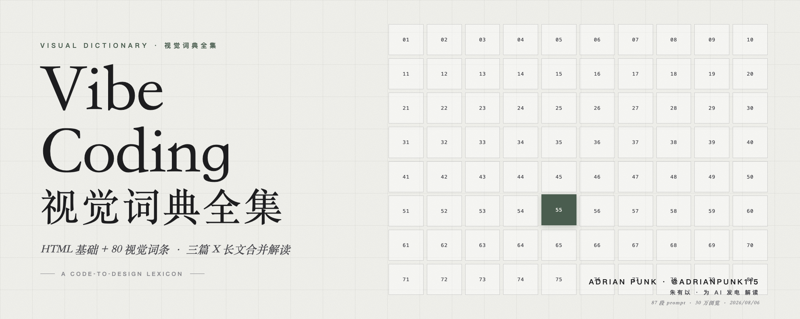
ADRIAN PUNK · @ADRIANPUNK115 · 三篇合并 · 80 词条 · 87 段 prompt
为什么把这三篇合在一起。Adrian Punk 的「Vibe Coding」系列三篇 X 长文构成了一套完整的设计词典：第一篇 HTML 小白从 0 到 1 是入门地基，第二篇 视觉词典上篇 是 40 个静态结构词条，第三篇 视觉词典下篇 是 40 个动态效果词条。三篇加起来 30 万浏览，是中文 AI + 设计圈最实用的网页视觉词典之一。
合在一起读的好处是：先学 HTML 基础术语 → 再用 80 个视觉词条对照检查自己的网页 → 87 段 prompt 直接复制给 Codex / Cursor / Claude Code。比三篇分开消化更顺。
原文链接、发布日期、作者署名详见文末 引用与原文出处。
每个人都在用 AI 写网页，但"高级""简洁""有设计感"都不是明确的网页结构。AI 不知道内容应该怎么排，也不知道用户应该怎么浏览和操作。
— ADRIAN PUNK · 视觉词典上篇
PART I · HTML 基础：从 HTML/CSS/JavaScript 三个术语开始，搭第一个网页，再用 Agent 做出完整个人主页。读完这一部分，你能跟 AI 编程工具说清楚"改哪个文件、约束什么范围、怎样验收"。
HTML、CSS、JavaScript、根目录、相对路径、响应式……这些听起来有点"古法"的术语，今天反而成了 Agent 建站的实用宝典。
— ADRIAN PUNK · HTML 小白从 0 到 1
这三个词经常混在一起，其实很好区分。
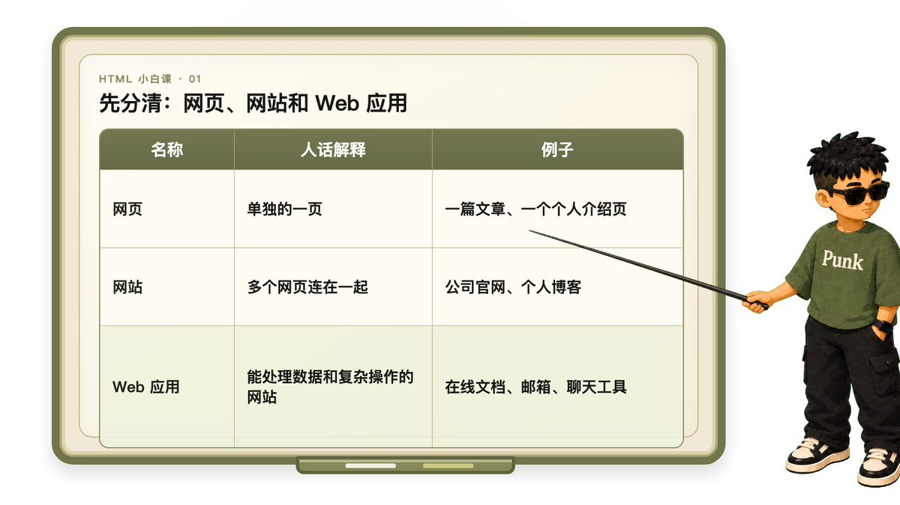
原文配图 · Adrian Punk (@AdrianPunk115) · 2026/08/02
可以这样记：
网页是一页纸 网站是一本书 Web 应用是一台机器
网页是一页纸 网站是一本书 Web 应用是一台机器
你今天要做的是一个网页。以后增加作品详情、博客和联系页面，它会慢慢变成一个网站。
一个网页项目不等于一个 HTML 文件。它通常包含页面、样式、互动、图片和说明文档。
你可以把它想成一套房子：
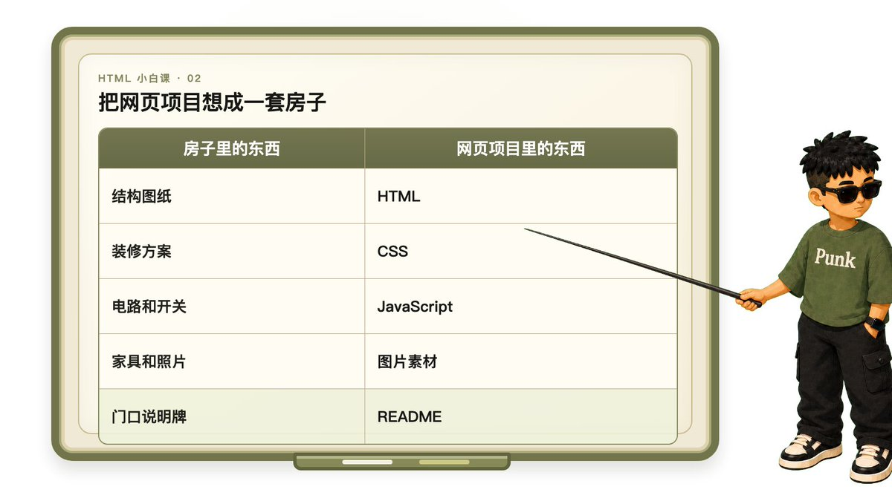
原文配图 · Adrian Punk (@AdrianPunk115) · 2026/08/02
这些内容需要放在同一个大文件夹里，这个最外层文件夹叫项目根目录。
一个常见结构是：
my-first-site/ ├── index.html ├── css/ │ └── style.css ├── js/ │ └── script.js ├── images/ │ └── avatar.jpg └── README.md
my-first-site/ ├── index.html ├── css/ │ └── style.css ├── js/ │ └── script.js ├── images/ │ └── avatar.jpg └── README.md
这里的 my-first-site 是整个项目，也是根目录。css、js、images 是用来分类的小抽屉，实际内容放在文件里。
第一个练习：只搭文件夹，不写代码
现在就做一遍：
- 在电脑上新建文件夹，命名为 my-first-site；
- 进入它，再新建 css、js、images 三个文件夹；
- 在根目录新建 index.html；
- 再新建 README.md；
- 在 README 里写一句："这是我的第一个网页项目。"
完成后，对照上面的目录树检查。文件夹层级一样，就算过关。
先把抽屉分好，后面才知道每样东西应该放在哪里。
文件名最后的小尾巴叫"扩展名"。它告诉电脑这个文件是什么类型。
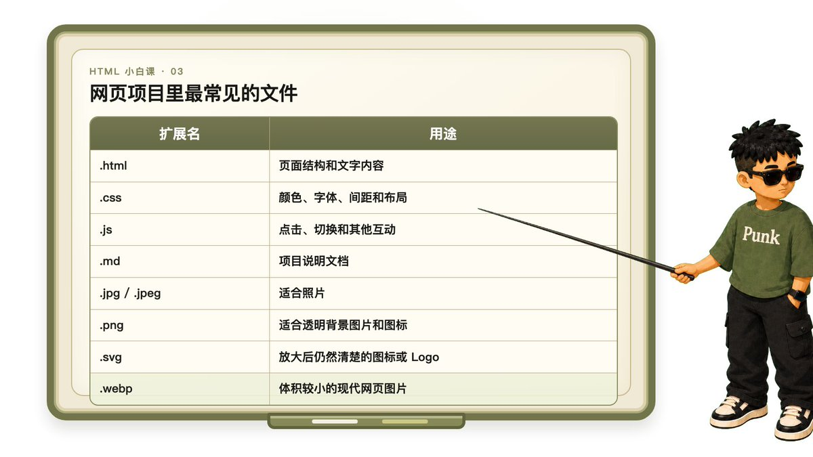
原文配图 · Adrian Punk (@AdrianPunk115) · 2026/08/02
你在屏幕上看到的一个按钮，通常由三个文件一起完成：
HTML：页面里有一个按钮 CSS：按钮是什么颜色、大小和形状 JavaScript：点击按钮后发生什么
HTML：页面里有一个按钮 CSS：按钮是什么颜色、大小和形状 JavaScript：点击按钮后发生什么
这就是常说的"骨架、皮肤、大脑"：
- HTML 管结构和内容；
- CSS 管样式和外观；
- JavaScript 管行为和互动。
三个文件分开以后，项目更容易修改。想改文案就找 HTML，想换颜色就找 CSS，按钮没反应再检查 JavaScript。
在大多数简单网页项目里，index.html 同时承担首页和入口文件两个角色。
访客打开网站地址时，服务器通常会先在根目录寻找 index.html。文件不存在、名字写错或者被移到其他文件夹，首页就可能打不开。
所以新手先记住三件事：
- index.html 放在项目根目录；
- 不要随意重命名它；
- 文件名全部使用英文小写。
HTML 页面里面有什么
一个 HTML 页面可以分成两块：
html ├── head：网页设置 └── body：用户看到的内容
html ├── head：网页设置 └── body：用户看到的内容
head 里通常放网页标题、中文编码、手机显示设置，以及 CSS 和 JavaScript 的地址。body 里放标题、段落、图片、按钮等可见内容。
页面内部还会继续分区：
body ├── header：顶部和导航 ├── main：页面主要内容 │ ├── section：自我介绍 │ ├── section：作品展示 │ └── section：联系方式 └── footer：页脚
body ├── header：顶部和导航 ├── main：页面主要内容 │ ├── section：自我介绍 │ ├── section：作品展示 │ └── section：联系方式 └── footer：页脚
这些标签能帮助浏览器、搜索引擎和屏幕阅读器理解页面。2
你暂时只需要认识几个常用标签：
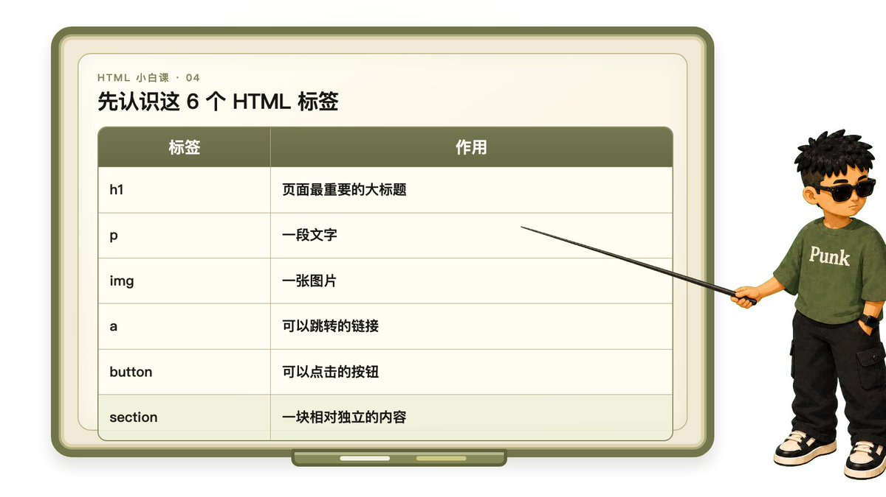
原文配图 · Adrian Punk (@AdrianPunk115) · 2026/08/02
理论讲完一半，现在让浏览器出现第一行属于你的文字。
第一步：准备一张图片
把一张自己的照片或头像放进 images 文件夹，命名为 avatar.jpg。
如果你的图片是 PNG，就命名为 avatar.png，后面的 HTML 也要写相同的扩展名。文件名和代码里的地址必须完全一致。
第二步：写入最小 HTML
用你选好的编辑器打开 index.html，复制下面这小段：
<!DOCTYPE html> <html lang="zh-CN"> <head> <meta charset="UTF-8"> <meta name="viewport" content="width=device-width, initial-scale=1.0"> <title>我的第一个网页</title> </head> <body> <h1>你好，这是我的第一个网页。</h1> <p>我正在学习网页是怎样组成的。</p> <img src="images/avatar.jpg" alt="我的个人头像"> <button id="hello-button" type="button">和我打个招呼</button> </body> </html>
<!DOCTYPE html> <html lang="zh-CN"> <head> <meta charset="UTF-8"> <meta name="viewport" content="width=device-width, initial-scale=1.0"> <title>我的第一个网页</title> </head> <body> <h1>你好，这是我的第一个网页。</h1> <p>我正在学习网页是怎样组成的。</p> <img src="images/avatar.jpg" alt="我的个人头像"> <button id="hello-button" type="button">和我打个招呼</button> </body> </html>
这段不用背。你只要能看出这些事：
- title 是浏览器标签页上的名字；
- h1 是页面里的大标题；
- p 是介绍文字；
- img 从 images 文件夹读取头像（这里的 images/avatar.jpg 就是"文件路径"，告诉浏览器头像放在哪里，第八章会详细解释）；
- button 在页面里放了一个按钮。
第三步：保存，再用浏览器打开
Mac 按 Command + S，Windows 按 Ctrl + S 保存。然后双击 index.html，用 Chrome、Edge、Firefox 或 Safari 打开。
你应该能看到标题、介绍、图片和按钮。页面会很朴素，图片也可能很大，这是正常的。HTML 此时只负责把内容放出来。
常见翻车现场： 如果浏览器显示一堆代码，先检查文件后缀名是不是被改成了 index.html.txt（Windows 记事本经常干这事）。如果图片裂开，对照 images 文件夹里的真实文件名，大小写和扩展名一个都不能错。
这一关的验收标准：浏览器能打开页面，文字和图片都能出现。
接下来让页面有颜色、有间距，图片也缩小一点。
第一步：连接 CSS 文件
在 index.html 的 head 里面加入这一行：
<link rel="stylesheet" href="css/style.css">
<link rel="stylesheet" href="css/style.css">
这句话的意思是：请去 css 文件夹里读取 style.css。
href="css/style.css" 也是一个文件路径——下一级 css 文件夹里的 style.css 文件。
第二步：给 style.css 写几条规则
用编辑器打开 css/style.css，复制下面这段：
body {
margin: 0;
padding: 48px;
color: #111111;
background: #f5f5f5;
font-family: Arial, "PingFang SC", sans-serif;
}
img {
display: block;
width: 240px;
margin: 24px 0;
border-radius: 24px;
}
button {
padding: 12px 20px;
border: 0;
border-radius: 999px;
}
body {
margin: 0;
padding: 48px;
color: #111111;
background: #f5f5f5;
font-family: Arial, "PingFang SC", sans-serif;
}
img {
display: block;
width: 240px;
margin: 24px 0;
border-radius: 24px;
}
button {
padding: 12px 20px;
border: 0;
border-radius: 999px;
}
这里不用逐个记属性。先观察它们改了什么：
- body 负责整个页面；
- background 把背景改成浅灰色；
- padding 给页面四周留出空白；
- width 把头像限制为 240 像素；
- border-radius 让头像和按钮出现圆角。
CSS 的写法可以简单理解为：
找到谁 → 改什么 → 改成什么
找到谁 → 改什么 → 改成什么
保存 CSS，回到浏览器刷新。Mac 可以按 Command + R，Windows 可以按 Ctrl + R。
这一关的验收标准：背景变成浅灰色，头像缩小，按钮出现圆角。
现在按钮已经出现，但点击它还没有任何变化。接下来给它加一个最简单的互动。
第一步：连接 JavaScript 文件
在 index.html 的 body 结束标签前（也就是 </body> 的上一行）加入：
<script src="js/script.js"></script>
<script src="js/script.js"></script>
注意：为什么放 body 底部，而不是 head 里？因为浏览器是从上往下读代码的。如果 script 放在 head，它会在按钮还没出现时就去找按钮——然后什么都找不到。放在 body 底部，确保按钮已经"出生"在页面上，JavaScript 再来找它。
第二步：写入按钮行为
用编辑器打开 js/script.js，复制下面这段：
document.querySelector("#hello-button").addEventListener("click", () => {
alert("你好呀！谢谢你来到我的网页。");
});
document.querySelector("#hello-button").addEventListener("click", () => {
alert("你好呀！谢谢你来到我的网页。");
});
它做的事情很简单：找到 hello-button，等用户点击，然后弹出一句话。
保存文件、刷新浏览器，再点击按钮。出现弹窗，就说明 HTML 里的按钮和 JavaScript 已经连上了。
这一关的验收标准：点击按钮后，浏览器会出现欢迎语。
页面想读取图片、CSS 和 JavaScript，都要先知道它们在哪里。这个地址就叫文件路径。
到目前为止，你已经用过了三种路径：
css/style.css 下一级 css 文件夹里的样式 js/script.js 下一级 js 文件夹里的脚本 images/avatar.jpg 下一级 images 文件夹里的头像
css/style.css 下一级 css 文件夹里的样式 js/script.js 下一级 js 文件夹里的脚本 images/avatar.jpg 下一级 images 文件夹里的头像
项目内部优先使用这种相对路径。好处是：整个项目被搬到另一个位置时，这些地址仍然可以继续工作。
路径可以这样记：
- 同一层：直接写文件名；
- 下一层：文件夹名/文件名；
- 上一层：../；
- 文件、大小写和扩展名必须一致。
新手阶段遵守"三不"会省很多时间：
- 不随意删除文件；
- 不随意移动文件；
- 不随意重命名文件。
如果一定要移动或改名，对应的路径也要一起修改。
这是网页学习中最值得养成的习惯。
修改 → 保存 → 刷新 → 验证 ↑ ↓ └──── 不满意再修改 ────┘
修改 → 保存 → 刷新 → 验证 ↑ ↓ └──── 不满意再修改 ────┘
一次只改一个地方。先换标题，保存并刷新；确认正确后，再改背景颜色。HTML、CSS 和 JavaScript 同时大改，出错后很难知道问题来自哪里。
最常见的翻车现场是："我明明改了，为什么没效果？"
先检查两件事：文件有没有保存，浏览器有没有刷新。
这个四步工作法以后同样适用于 Agent。Agent 改完文件，你仍然要回到浏览器验证。
双击 index.html 时，浏览器地址通常以 file:// 开头。这个方法适合检查最小页面。
当网页变得更复杂时，理想的方式是启动一个"本地服务器"，让浏览器地址变成 http://localhost 开头的形式——这样更接近真实的线上环境。
不过你现在不需要手动折腾这个。 好消息：后面用的 Agent 会自动启动本地服务器并打开预览，你只需要在浏览器里看。这里先记住概念就好：
双击打开：先看内容 本地运行：完整测试 公开上线：让别人访问
双击打开：先看内容 本地运行：完整测试 公开上线：让别人访问
电脑端正常也不代表手机端正常。缩窄浏览器窗口，检查标题有没有被裁掉、图片有没有超出屏幕、按钮有没有挤在一起。响应式设计会让页面根据屏幕宽度调整字号、间距和排列方式。
到这里，你已经从零搭出了第一个网页项目，也知道每个文件负责什么。接下来进入 Agent 演示。
小白：从手动搭建到用 Agent 搭建
你可能在想：前面手写了这么多代码，后面 Agent 真的能全自动吗？
答案是：能。但你不需要理解 Agent 写的每一行代码。
前面十章只想帮你拿到三样东西，你不需要因此变成程序员：
- 一套术语——你知道"CSS""文件路径""根目录""响应式"这些词是什么意思，所以你能跟 Agent 说清楚；
- 一个工作习惯——修改、保存、刷新、验证。Agent 改完代码，你仍然要自己打开浏览器检查；
- 一种判断力——图片裂了大概率是路径写错了，按钮没反应大概率是 JS 没连上。你不需要会修，但你能告诉 Agent 往哪个方向排查。
接下来用的 Agent 叫 [Codex / 你实际使用的工具名]。它是一个 AI 编程工具——你跟它聊天，它帮你写代码、建文件、启动预览。你负责描述想要什么、检查做得对不对；它负责实现。
好，现在进入实战。
前面的小页面用来学习。现在用 Agent 做一个可以展示的版本。
这次演示使用 Punk 的个人信息和像素头像，目标是完成下面这张个人主页：
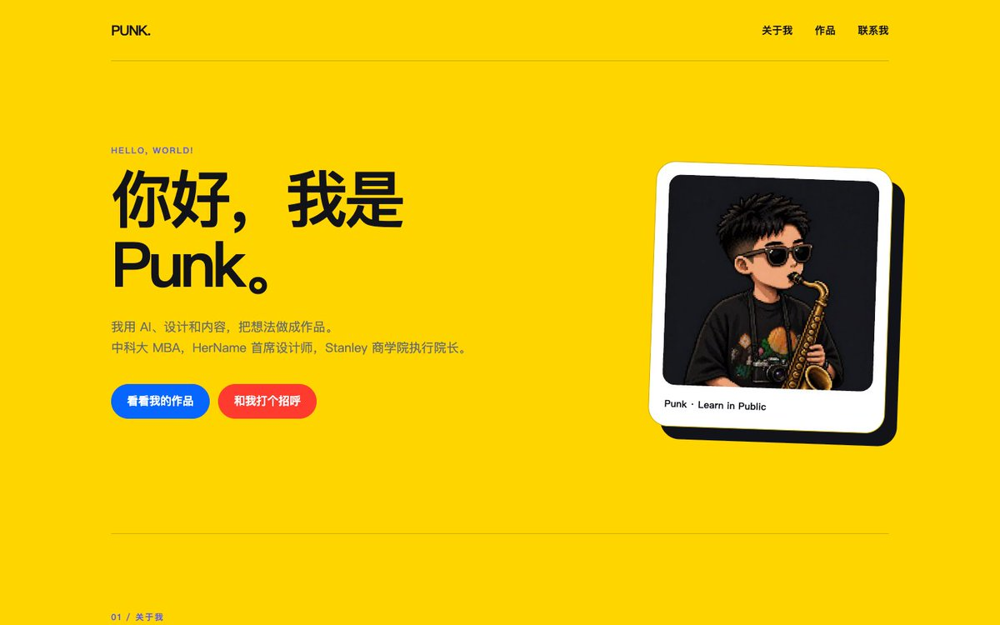
原文配图 · Adrian Punk (@AdrianPunk115) · 2026/08/02
第一步：准备个人内容
在项目的 images 文件夹里放入像素头像，命名为 punk.jpg。
再准备这些信息：
名字：Punk 介绍：我用 AI、设计和内容，把想法做成作品。 身份：中科大 MBA、HerName 首席设计师、Stanley 商学院执行院长 页面：关于我、作品、联系方式 头像：images/punk.jpg
名字：Punk 介绍：我用 AI、设计和内容，把想法做成作品。 身份：中科大 MBA、HerName 首席设计师、Stanley 商学院执行院长 页面：关于我、作品、联系方式 头像：images/punk.jpg
第二步：找一两个对标网页
可以从这些设计网站开始：
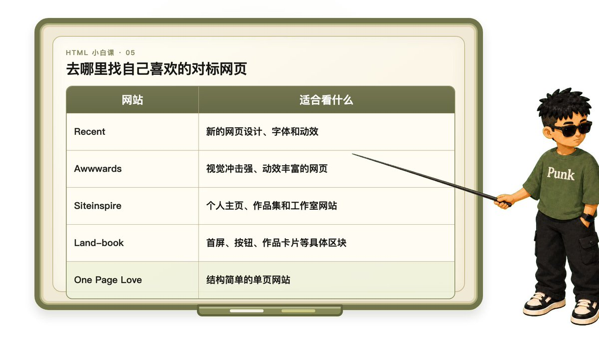
原文配图 · Adrian Punk (@AdrianPunk115) · 2026/08/02
网站入口：Recent｜Awwwards｜Siteinspire｜Land-book｜One Page Love
以 Recent 为例，先点进喜欢的作品，再打开它对应的真实网页。复制具体页面地址，并记下自己喜欢的部分。
一次选一两个就够了。你可以喜欢 A 页的配色，也可以喜欢 B 页"左边文字、右边照片"的首屏。
第三步：先只分析对标网页
第一条提示词只负责分析。先让 Agent 把配色、排版、字体、按钮和动效说清楚，暂时不要创建网页，也不要修改项目文件。
下面这段提示词看起来很长，但你要做的只是把方括号 `[ ]` 里的内容替换成你自己的，然后整段复制给 Agent。不需要理解每一行，Agent 会按要求一条一条分析。
在 Agent 中打开项目文件夹，把下面方括号里的内容替换掉，再整段复制。
请阅读并分析下面的对标网页： 参考网页 A：[粘贴具体网页 URL] 我喜欢它的部分：[例如：黄色配色、超大标题、首屏留白] 参考网页 B：[没有第二个就删除这一项] 我喜欢它的部分：[例如：左侧文字、右侧人物照片、按钮样式] 这一步只做设计分析。暂时不要创建网页、不要写代码，也不要修改当前项目中的任何文件。 请分别分析每个网页，并用简单的中文说明： 1. 页面结构 - 顶部导航、首屏、内容区、作品区和页脚怎样排列； - 内容最大宽度、左右对齐方式、网格和留白大概是多少； - 哪些内容最先吸引注意力，视觉顺序是什么。 2. 配色 - 主色、辅助色、背景色、文字色和按钮色； - 给出接近的 HEX 色值； - 说明每种颜色用在什么位置、大概占多少比例； - 检查文字和背景是否容易阅读。 3. 文字和字体 - 标题、正文、导航、按钮分别是什么字体气质； - 估算电脑端和手机端的字号、字重、行高和字间距； - 分析标题怎样换行，正文一行大约多长； - 分析文案的层级、长度和语气，不复制原文。 4. 排版 - 首屏是左右布局、上下布局还是居中布局； - 文字、图片、按钮之间怎样对齐； - 区块之间的上下间距和页面节奏； - 图片是什么比例，有没有圆角、边框、旋转或阴影。 5. 按钮和组件 - 按钮的大小、颜色、圆角、边框、阴影和文字样式； - 鼠标悬停、按下和点击后分别有什么变化； - 导航、卡片、标签和联系方式分别怎样设计； - 哪些组件承担主要操作，哪些只负责展示信息。 6. 动效 - 页面打开、滚动、悬停和点击时分别有什么动效； - 动效从什么状态开始，到什么状态结束； - 估算持续时间、延迟和速度变化； - 哪些动效适合保留，哪些可能影响手机性能； - 如果无法确认动效，请明确告诉我需要补充截图还是录屏。 7. 手机端 - 页面在窄屏上怎样重新排列； - 标题、图片、按钮和导航怎样缩放； - 有没有隐藏内容、折叠菜单或横向滚动； - 电脑端和手机端最大的三个区别是什么。 分析完成后，请输出一份"设计 DNA"： - 每个参考网页最值得借鉴的三条规律； - 两个参考之间有没有冲突； - 如果需要组合，应该怎样确定主次； - 哪些规律适合个人主页； - 哪些内容需要改成我的版本； - 制作时最容易做错的地方。 最后列出你还需要我补充的信息。 再次提醒：这一步只分析，不创建文件，不开始制作网页。
请阅读并分析下面的对标网页： 参考网页 A：[粘贴具体网页 URL] 我喜欢它的部分：[例如：黄色配色、超大标题、首屏留白] 参考网页 B：[没有第二个就删除这一项] 我喜欢它的部分：[例如：左侧文字、右侧人物照片、按钮样式] 这一步只做设计分析。暂时不要创建网页、不要写代码，也不要修改当前项目中的任何文件。 请分别分析每个网页，并用简单的中文说明： 1. 页面结构 - 顶部导航、首屏、内容区、作品区和页脚怎样排列； - 内容最大宽度、左右对齐方式、网格和留白大概是多少； - 哪些内容最先吸引注意力，视觉顺序是什么。 2. 配色 - 主色、辅助色、背景色、文字色和按钮色； - 给出接近的 HEX 色值； - 说明每种颜色用在什么位置、大概占多少比例； - 检查文字和背景是否容易阅读。 3. 文字和字体 - 标题、正文、导航、按钮分别是什么字体气质； - 估算电脑端和手机端的字号、字重、行高和字间距； - 分析标题怎样换行，正文一行大约多长； - 分析文案的层级、长度和语气，不复制原文。 4. 排版 - 首屏是左右布局、上下布局还是居中布局； - 文字、图片、按钮之间怎样对齐； - 区块之间的上下间距和页面节奏； - 图片是什么比例，有没有圆角、边框、旋转或阴影。 5. 按钮和组件 - 按钮的大小、颜色、圆角、边框、阴影和文字样式； - 鼠标悬停、按下和点击后分别有什么变化； - 导航、卡片、标签和联系方式分别怎样设计； - 哪些组件承担主要操作，哪些只负责展示信息。 6. 动效 - 页面打开、滚动、悬停和点击时分别有什么动效； - 动效从什么状态开始，到什么状态结束； - 估算持续时间、延迟和速度变化； - 哪些动效适合保留，哪些可能影响手机性能； - 如果无法确认动效，请明确告诉我需要补充截图还是录屏。 7. 手机端 - 页面在窄屏上怎样重新排列； - 标题、图片、按钮和导航怎样缩放； - 有没有隐藏内容、折叠菜单或横向滚动； - 电脑端和手机端最大的三个区别是什么。 分析完成后，请输出一份"设计 DNA"： - 每个参考网页最值得借鉴的三条规律； - 两个参考之间有没有冲突； - 如果需要组合，应该怎样确定主次； - 哪些规律适合个人主页； - 哪些内容需要改成我的版本； - 制作时最容易做错的地方。 最后列出你还需要我补充的信息。 再次提醒：这一步只分析，不创建文件，不开始制作网页。
如果参考网站阻止访问，把电脑截图、手机截图和一段滚动录屏放进 references 文件夹，再让 Agent 从这些材料开始分析。不要让它根据网站名字猜设计。
拿到分析报告后，先看三件事：它有没有抓住你喜欢的部分，有没有把两个参考的主次说清楚，给出的设计规律能不能落到你的个人主页上。
方向不对时，先继续追问。例如：
你对配色的分析比较准确，但首屏排版还不够具体。请补充文字区和图片区的宽度比例、对齐方式、上下留白和手机端变化。继续只做分析。
你对配色的分析比较准确，但首屏排版还不够具体。请补充文字区和图片区的宽度比例、对齐方式、上下留白和手机端变化。继续只做分析。
第四步：确认分析后，再发制作指令
分析方向确认以后，在同一个 Agent 任务中发送第二条提示词。这样它可以直接使用刚才整理的设计 DNA。
如果你换了一个新任务，需要先把上一轮的设计 DNA 一起粘贴过去。
请基于你刚才完成的对标网页分析和"设计 DNA"，在当前项目文件夹制作一个属于我的原创个人主页。 这一步开始创建和修改网页文件，不需要重新分析参考网站。 一、我的个人信息 - 名字：Punk - 主标题：你好，我是 Punk。 - 介绍：我用 AI、设计和内容，把想法做成作品。 - 身份：中科大 MBA、HerName 首席设计师、Stanley 商学院执行院长 - 页面内容：关于我、作品、联系方式 - 头像：使用 images/punk.jpg 二、我的设计要求 - 整体使用明亮的黄色背景和黑色文字； - 首屏左侧放标题和介绍，右侧放像素头像； - "看看我的作品"使用通透的亮蓝色按钮； - "和我打个招呼"使用明亮的正红色按钮； - 头像完整显示，不裁掉人物、相机和萨克斯； - 保留充足留白，页面清楚、有趣，手机上也容易阅读； - 动效保持轻量，包含按钮悬停和适量的进入效果； - 参考刚才的设计 DNA 决定具体字号、间距、图片比例和组件细节。 三、原创和文件要求 1. 使用原生 HTML、CSS 和 JavaScript； 2. 创建清楚的项目文件夹和 README； 3. 不安装前端框架； 4. 不复制参考网页的 Logo、品牌名、文案、图片、视频和源代码； 5. 不使用 iframe，也不把参考网页截图当成背景； 6. 可以借鉴配色比例、字体层级、网格、组件和动效规律； 7. 所有文件只写入当前项目文件夹； 8. 如果文件夹已有内容，先读取并说明准备修改哪些文件； 9. 图片添加准确的文字说明； 10. 动效需要照顾不希望看到动画的用户。 四、完成浏览器验收 制作完成后，请： 1. 启动本地预览； 2. 在 1440×900 的电脑尺寸检查页面； 3. 在 390×844 的手机尺寸检查页面； 4. 点击导航和所有按钮； 5. 检查标题裁切、图片变形、横向滚动和资源加载； 6. 检查浏览器控制台有没有报错； 7. 发现问题直接修复，再重新检查； 8. 保存电脑端和手机端截图； 9. 最后列出实际创建或修改的文件； 10. 说明最终页面分别采用了哪些设计 DNA，又做了哪些原创调整。 请直接完成制作和验收，不要在聊天里粘贴整段网页代码。
请基于你刚才完成的对标网页分析和"设计 DNA"，在当前项目文件夹制作一个属于我的原创个人主页。 这一步开始创建和修改网页文件，不需要重新分析参考网站。 一、我的个人信息 - 名字：Punk - 主标题：你好，我是 Punk。 - 介绍：我用 AI、设计和内容，把想法做成作品。 - 身份：中科大 MBA、HerName 首席设计师、Stanley 商学院执行院长 - 页面内容：关于我、作品、联系方式 - 头像：使用 images/punk.jpg 二、我的设计要求 - 整体使用明亮的黄色背景和黑色文字； - 首屏左侧放标题和介绍，右侧放像素头像； - "看看我的作品"使用通透的亮蓝色按钮； - "和我打个招呼"使用明亮的正红色按钮； - 头像完整显示，不裁掉人物、相机和萨克斯； - 保留充足留白，页面清楚、有趣，手机上也容易阅读； - 动效保持轻量，包含按钮悬停和适量的进入效果； - 参考刚才的设计 DNA 决定具体字号、间距、图片比例和组件细节。 三、原创和文件要求 1. 使用原生 HTML、CSS 和 JavaScript； 2. 创建清楚的项目文件夹和 README； 3. 不安装前端框架； 4. 不复制参考网页的 Logo、品牌名、文案、图片、视频和源代码； 5. 不使用 iframe，也不把参考网页截图当成背景； 6. 可以借鉴配色比例、字体层级、网格、组件和动效规律； 7. 所有文件只写入当前项目文件夹； 8. 如果文件夹已有内容，先读取并说明准备修改哪些文件； 9. 图片添加准确的文字说明； 10. 动效需要照顾不希望看到动画的用户。 四、完成浏览器验收 制作完成后，请： 1. 启动本地预览； 2. 在 1440×900 的电脑尺寸检查页面； 3. 在 390×844 的手机尺寸检查页面； 4. 点击导航和所有按钮； 5. 检查标题裁切、图片变形、横向滚动和资源加载； 6. 检查浏览器控制台有没有报错； 7. 发现问题直接修复，再重新检查； 8. 保存电脑端和手机端截图； 9. 最后列出实际创建或修改的文件； 10. 说明最终页面分别采用了哪些设计 DNA，又做了哪些原创调整。 请直接完成制作和验收，不要在聊天里粘贴整段网页代码。
两步拆开以后，你可以在 Agent 动手前先纠正设计方向。分析通过，再进入制作，返工会少很多。
不要让 Agent 下载对方的照片、Logo 或源代码。最终页面借鉴设计规律，名字、文字、图片和品牌都来自自己的项目。
第一版很少一次到位。你可能觉得头像太小、黄色偏暗，或者按钮颜色不够亮。
按照前面学过的四步循环继续：
说清修改内容 → Agent 修改 → 刷新浏览器 → 检查结果
说清修改内容 → Agent 修改 → 刷新浏览器 → 检查结果
例如：
请继续修改当前网页： 1. 保留现有结构和文字； 2. 黄色背景再明亮一点； 3. 蓝色和红色按钮提高亮度，但不要使用荧光色； 4. 头像稍微放大，保持完整显示； 5. 其他内容不要改动。 修改后重新检查电脑端和手机端。
请继续修改当前网页： 1. 保留现有结构和文字； 2. 黄色背景再明亮一点； 3. 蓝色和红色按钮提高亮度，但不要使用荧光色； 4. 头像稍微放大，保持完整显示； 5. 其他内容不要改动。 修改后重新检查电脑端和手机端。
"做得高级一点"很难执行。颜色、位置、大小、间距和动效都可以说得更具体。
把下面这段交给 Agent：
请对当前网页做一次最终检查： 1. 分别使用电脑和手机尺寸打开； 2. 点击导航、链接和按钮； 3. 检查标题、正文和图片有没有被裁掉； 4. 检查页面有没有横向滚动； 5. 检查图片、CSS 和 JavaScript 是否成功加载； 6. 检查浏览器控制台有没有报错； 7. 修复问题后重新截图。 请告诉我每个问题的原因和修复结果，不要粘贴大段代码。
请对当前网页做一次最终检查： 1. 分别使用电脑和手机尺寸打开； 2. 点击导航、链接和按钮； 3. 检查标题、正文和图片有没有被裁掉； 4. 检查页面有没有横向滚动； 5. 检查图片、CSS 和 JavaScript 是否成功加载； 6. 检查浏览器控制台有没有报错； 7. 修复问题后重新截图。 请告诉我每个问题的原因和修复结果，不要粘贴大段代码。
手机端应该可以顺着向下阅读：
到这里，网页已经能在你的电脑上运行。但地址栏里的 localhost 只有你自己能访问。
部署，就是把项目文件放到公开服务器上。部署完成后，平台会给你一个公开网址，你可以把它发给任何人。
第一个纯 HTML、CSS、JavaScript 项目，可以使用 GitHub Pages。官方入门流程支持从仓库分支直接发布
最简部署流程
- 登录 GitHub，新建一个公开仓库；
- 把项目里的 index.html、css、js、images 和 README 上传到仓库；
- 确认仓库最外层可以直接看到 index.html；
- 打开仓库的 Settings → Pages；
- 在 Build and deployment 中选择 Deploy from a branch；
- 选择存放网页文件的分支和根目录；
- 保存设置，等待平台生成公开网址；
- 打开网址，再检查一次电脑端、手机端、图片和按钮。
你也可以让 Agent 带着你完成：
请检查当前网页是否适合部署到 GitHub Pages。 先完成这些检查： 1. 确认 index.html 位于项目根目录； 2. 检查 CSS、JavaScript 和图片是否全部使用相对路径； 3. 检查项目中有没有密码、API Key、私人地址或不应该公开的文件； 4. 检查电脑端和手机端没有明显错误。 检查通过后，请按照 GitHub Pages 当前的官方流程，一步一步带我部署。 每一步说明我要点击哪里、应该看到什么。 等我确认以后再进入下一步，不要替我猜账号、仓库名或权限设置。 部署完成后，请帮我打开公开网址并做一次最终检查。
请检查当前网页是否适合部署到 GitHub Pages。 先完成这些检查： 1. 确认 index.html 位于项目根目录； 2. 检查 CSS、JavaScript 和图片是否全部使用相对路径； 3. 检查项目中有没有密码、API Key、私人地址或不应该公开的文件； 4. 检查电脑端和手机端没有明显错误。 检查通过后，请按照 GitHub Pages 当前的官方流程，一步一步带我部署。 每一步说明我要点击哪里、应该看到什么。 等我确认以后再进入下一步，不要替我猜账号、仓库名或权限设置。 部署完成后，请帮我打开公开网址并做一次最终检查。
公开前再看一眼项目内容。私人电话、家庭地址、合同、公司内部资料、API Key 和没有授权的图片，都不要放进公开仓库。
当 GitHub 提供的网址能够正常打开时，你的网页已经上线了。
平台提供的网址可以用，但域名更短、更好记。买域名和绑定稍微复杂一些，我单独写了一篇：
从空文件夹，到公开网址，再到自己的域名，这条路线才算完整走通。
当别人输入你的域名，看见你亲手规划、再由 Agent 帮你完成的网页时，第一个网站就正式完成了。
PART II · 视觉词典（上篇）：40 个词条，覆盖网页的静态结构 — 布局（Layout）、页面结构（Page Structure）、导航（Navigation）、组件（UI Components）。每个词条包含概念、适用场景、可直接复制给 AI 的提示词。
01Card-based Layout卡片式布局
把内容拆成一张张独立卡片，每张卡片承载一个项目、一篇文章、一项服务或一组信息。卡片之间边界清楚，浏览速度快，也是 AI 最容易稳定实现的布局之一。
适合 作品集、博客列表、功能介绍、工具导航、商品列表、个人主页。
为 Punk 的个人网站创建一个响应式卡片式布局， 项目区展示 6 张独立卡片，每张卡片包含项目封面、项目名称、两行简介、技术标签和“查看项目”按钮； 桌面端三列，平板端两列，手机端单列； 使用米白背景、深绿色强调色、细边框、克制圆角和轻微阴影。
为 Punk 的个人网站创建一个响应式卡片式布局， 项目区展示 6 张独立卡片，每张卡片包含项目封面、项目名称、两行简介、技术标签和“查看项目”按钮； 桌面端三列，平板端两列，手机端单列； 使用米白背景、深绿色强调色、细边框、克制圆角和轻微阴影。
02Masonry Layout瀑布流
卡片宽度大致一致，但高度不统一，内容像瀑布一样自然错落。它不会强迫每一行严格对齐，因此特别适合不同尺寸的图片和视觉作品。
适合 AI 生图作品集、摄影集、灵感墙、案例封面、视觉型博客。
为 Punk 创建一个瀑布流作品画廊， 使用三列 Masonry Layout 展示不同宽高比的 AI 作品，保留图片原始比例，不要裁切成统一高度； 桌面端三列，平板端两列，手机端单列； 图片进入视口附近时再加载，点击后打开全屏预览。
为 Punk 创建一个瀑布流作品画廊， 使用三列 Masonry Layout 展示不同宽高比的 AI 作品，保留图片原始比例，不要裁切成统一高度； 桌面端三列，平板端两列，手机端单列； 图片进入视口附近时再加载，点击后打开全屏预览。
03Bento Grid便当盒布局
用大小不同的矩形模块组成页面。最大的区域负责展示核心内容，小模块放技能、文章、联系方式、数字或状态，依靠尺寸差异建立视觉优先级。
适合 个人主页、产品首页、SaaS 首页、创作者网站、AI 工具展示页。
为 Punk 设计一个 Bento Grid 个人主页， 左侧使用一张大型 Hero 卡片展示姓名、身份介绍和主要按钮，右 侧使用大小不同的模块卡片展示 About、Skills、Latest Writing 和 Contact，底部放一张横向 Featured Project 卡片； 不要做成平均九宫格，要通过模块大小突出主次关系。
为 Punk 设计一个 Bento Grid 个人主页， 左侧使用一张大型 Hero 卡片展示姓名、身份介绍和主要按钮，右 侧使用大小不同的模块卡片展示 About、Skills、Latest Writing 和 Contact，底部放一张横向 Featured Project 卡片； 不要做成平均九宫格，要通过模块大小突出主次关系。
04Split-screen Layout分屏布局
把页面分成左右两部分，常见形式是左边文字、右边视觉，或者一边固定、另一边滚动。它能让信息和视觉同时成为主角。
适合 个人首页、产品介绍、登录页、创意作品集、对比页面。
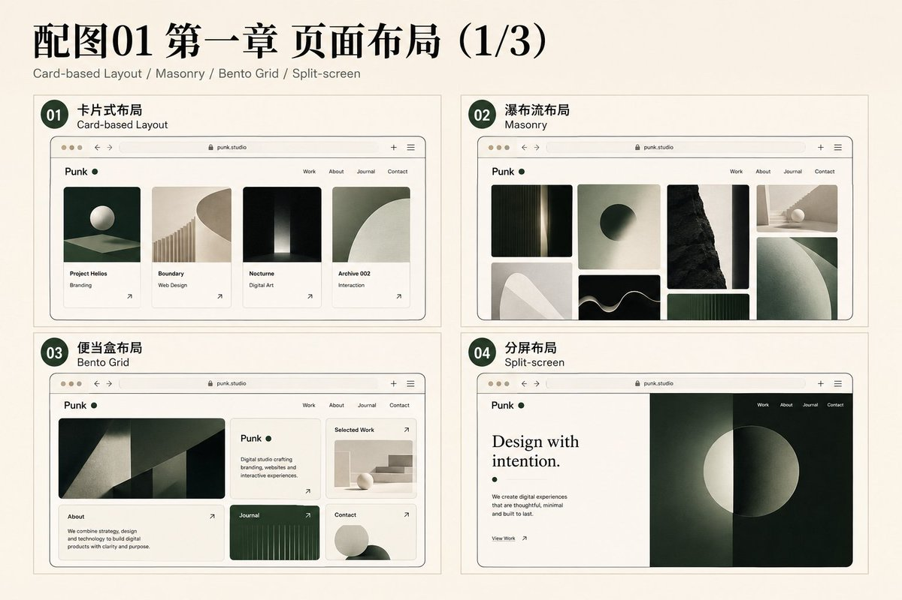
原文配图 · Adrian Punk (@AdrianPunk115) · 词条 4
为 Punk 的个人主页设计一个 Split-screen Hero， 左侧占 45%，展示姓名、身份、简介和两个操作按钮，右侧占 55%， 展示抽象的网页界面与空间化视觉； 桌面端保持左右分屏，手机端改为上下结构，文字在前、视觉在后。
为 Punk 的个人主页设计一个 Split-screen Hero， 左侧占 45%，展示姓名、身份、简介和两个操作按钮，右侧占 55%， 展示抽象的网页界面与空间化视觉； 桌面端保持左右分屏，手机端改为上下结构，文字在前、视觉在后。
05CSS网格布局 CSS Grid Layout
按照明确的行和列组织页面，适合处理二维关系。它可以让不同模块占据不同列宽，构建规则或非对称的复杂页面。
适合 复杂首页、杂志排版、Dashboard、非对称作品集、响应式模块。
使用 CSS Grid 构建 Punk 的作品页面， 桌面端采用 12 列网格，主项目占 8 列，项目说明占 4 列，其余项目每张占 4 列； 900px 以下改为 6 列，640px 以下改为单列； 使用 grid-template-columns 和 gap，不要用绝对定位硬拼布局。
使用 CSS Grid 构建 Punk 的作品页面， 桌面端采用 12 列网格，主项目占 8 列，项目说明占 4 列，其余项目每张占 4 列； 900px 以下改为 6 列，640px 以下改为单列； 使用 grid-template-columns 和 gap，不要用绝对定位硬拼布局。
06Flexbox弹性布局
让一组元素沿一个主要方向排列，最适合处理一行或一列中的对齐、间距和顺序。它常出现在导航栏、按钮组和卡片内部。
适合 顶部导航、工具栏、按钮组、标签、头像与文字组合、卡片内部。
Punk 网站的顶部导航使用 Flexbox，左侧显示 Punk Logo，右侧显示 Work、About、Writing、Contact 和主题切换按钮； 使用 justify-content: space-between 和 align-items: center， 小屏幕时隐藏文字导航并显示 Hamburger Menu。
Punk 网站的顶部导航使用 Flexbox，左侧显示 Punk Logo，右侧显示 Work、About、Writing、Contact 和主题切换按钮； 使用 justify-content: space-between 和 align-items: center， 小屏幕时隐藏文字导航并显示 Hamburger Menu。
07Sidebar Layout侧边栏布局
页面一侧长期保留一条栏，另一侧显示主要内容。侧边栏可以承载个人信息、分类、目录、筛选器或后台导航。
适合 博客、文档站、后台、作品归档、设置页。
为 Punk 的 Journal 页面添加左侧 Sidebar，宽度为 260px， 包含头像、个人简介、文章分类、标签和社交链接，右侧为文章列表； 桌面端侧边栏保持 Sticky，手机端把侧边栏内容折叠到顶部筛选按钮中。
为 Punk 的 Journal 页面添加左侧 Sidebar，宽度为 260px， 包含头像、个人简介、文章分类、标签和社交链接，右侧为文章列表； 桌面端侧边栏保持 Sticky，手机端把侧边栏内容折叠到顶部筛选按钮中。
08Dashboard Layout仪表盘布局
通常由侧边导航、顶部工具栏、统计卡片、图表、表格和最近活动构成，强调信息密度与任务效率。
适合 个人内容后台、项目管理、数据产品、CMS、AI 工具控制台。
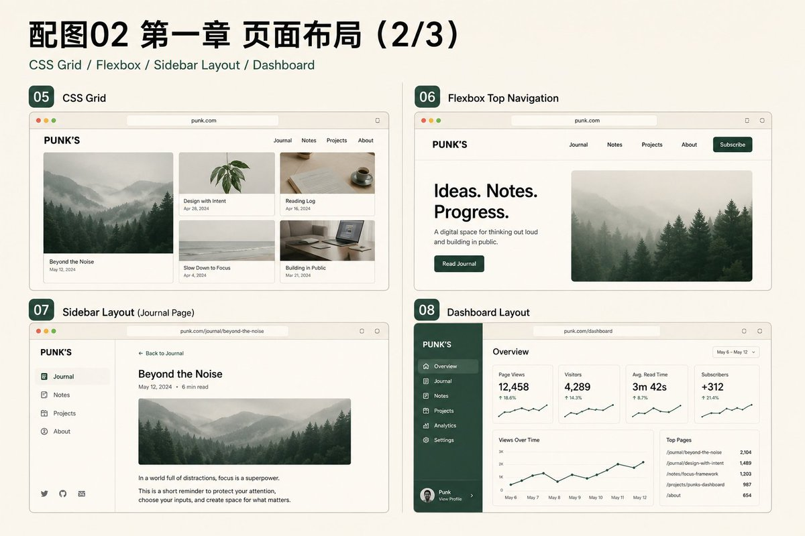
原文配图 · Adrian Punk (@AdrianPunk115) · 词条 8
为 Punk 制作一个个人创作后台 Dashboard， 左侧导航包含 Overview、Projects、Writing、Analytics 和 Settings， 顶部包含搜索框、通知和头像，主内容区展示 4 张统计卡片、最近项目列表和访问趋势图； 桌面端侧栏固定，手机端转换为 Drawer。
为 Punk 制作一个个人创作后台 Dashboard， 左侧导航包含 Overview、Projects、Writing、Analytics 和 Settings， 顶部包含搜索框、通知和头像，主内容区展示 4 张统计卡片、最近项目列表和访问趋势图； 桌面端侧栏固定，手机端转换为 Drawer。
09Responsive Layout响应式布局
同一个网页根据屏幕尺寸重新排列，而不是把桌面页面整体缩小。桌面、平板和手机应该有不同的布局状态。
适合 几乎所有公开网页。
让 Punk 的个人网站完全响应式，设置 desktop、tablet、mobile 三种布局状态； 桌面端内容最大宽度为 1200px，平板端卡片两列，手机端单列并把顶部导航改成 Hamburger Menu； 保证正文不出现横向滚动，所有按钮在触屏设备上都有清晰点击区域。
让 Punk 的个人网站完全响应式，设置 desktop、tablet、mobile 三种布局状态； 桌面端内容最大宽度为 1200px，平板端卡片两列，手机端单列并把顶部导航改成 Hamburger Menu； 保证正文不出现横向滚动，所有按钮在触屏设备上都有清晰点击区域。
10Full-bleed Layout全出血布局
图片、视频或颜色区域一直延伸到屏幕边缘，不受普通内容容器限制。它常被用来制造沉浸式首屏或章节过渡。
适合 品牌首页、作品开场、摄影网站、产品发布页、沉浸式故事。
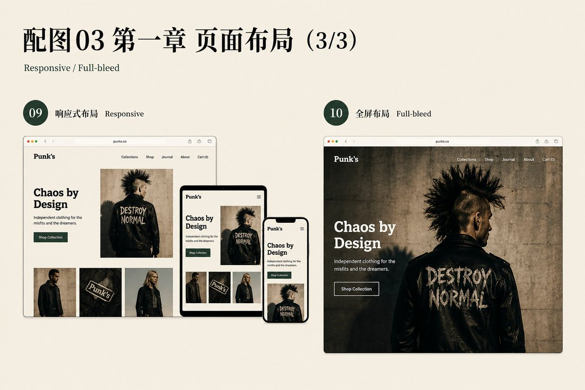
原文配图 · Adrian Punk (@AdrianPunk115) · 词条 10
为 Punk 的首页创建一个 Full-bleed Hero， 背景视觉铺满浏览器宽度并占据 90vh，不受主内容 max-width 限制， 前景放置大标题、简短介绍和 View Work 按钮； Hero 下方的正文重新回到 1120px 的居中容器，并保证文字与背景有足够对比度。
为 Punk 的首页创建一个 Full-bleed Hero， 背景视觉铺满浏览器宽度并占据 90vh，不受主内容 max-width 限制， 前景放置大标题、简短介绍和 View Work 按钮； Hero 下方的正文重新回到 1120px 的居中容器，并保证文字与背景有足够对比度。
11Single-page Website单页网站
所有主要内容都放在同一页面中，用户通过滚动或锚点导航浏览 Hero、About、Projects、Writing 和 Contact。
适合 个人名片、轻量作品集、活动页、早期产品介绍、信息量不大的官网。
为 Punk 制作一个单页个人作品网站，页面顺序为 Hero、About、Selected Work、Writing、Contact 和 Footer； 顶部导航通过 Anchor Links 跳转到对应区块， 使用平滑滚动但尊重 prefers-reduced-motion，每个区块都设置清晰的 id 和语义化标题。
为 Punk 制作一个单页个人作品网站，页面顺序为 Hero、About、Selected Work、Writing、Contact 和 Footer； 顶部导航通过 Anchor Links 跳转到对应区块， 使用平滑滚动但尊重 prefers-reduced-motion，每个区块都设置清晰的 id 和语义化标题。
12Multi-page Website多页网站
不同内容拥有独立页面和网址，例如首页、作品列表、项目详情、关于、文章和联系页面。它更适合长期扩展。
适合 成熟作品集、博客、企业官网、内容站、项目较多的网站。
把 Punk 的网站设计为多页网站，包含 Home、Work、Project Detail、About、Journal、Article 和 Contact； 所有页面共享统一的 Header 与 Footer， 当前导航项显示 active 状态，项目卡片点击后进入独立详情页。
把 Punk 的网站设计为多页网站，包含 Home、Work、Project Detail、About、Journal、Article 和 Contact； 所有页面共享统一的 Header 与 Footer， 当前导航项显示 active 状态，项目卡片点击后进入独立详情页。
13Landing Page落地页
围绕一个明确目标组织页面，用户被引导完成注册、购买、预约、下载或联系。页面中的每一部分都服务于同一个行动。
适合 AI 产品、课程、活动、Newsletter、个人服务、作品发布。
为 Punk 的 AI 设计服务制作一个 Landing Page，唯一目标是引导访客预约咨询； 页面包含 Hero、服务价值、工作流程、三个案例、客户评价、FAQ 和最终 CTA，所有主要按钮统一使用“预约一次沟通”， 不要加入与转化目标无关的复杂导航。
为 Punk 的 AI 设计服务制作一个 Landing Page，唯一目标是引导访客预约咨询； 页面包含 Hero、服务价值、工作流程、三个案例、客户评价、FAQ 和最终 CTA，所有主要按钮统一使用“预约一次沟通”， 不要加入与转化目标无关的复杂导航。
14Case Study Page案例研究页
不仅展示最终效果，还讲清项目背景、问题、过程、关键决策、方案、结果和复盘。
适合 设计师作品集、开发者项目、产品项目、品牌案例、求职作品集。
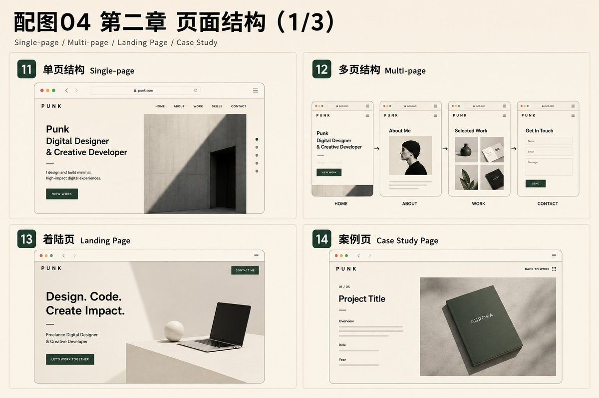
原文配图 · Adrian Punk (@AdrianPunk115) · 词条 14
为 Punk 创建一个项目案例研究页， 包含项目概览、背景问题、Punk 的职责、设计过程、关键决策、最终方案、结果数据和复盘； 顶部使用大封面，正文保持窄阅读宽度，过程图片可全宽穿插，桌面端右侧提供 Sticky Table of Contents。
为 Punk 创建一个项目案例研究页， 包含项目概览、背景问题、Punk 的职责、设计过程、关键决策、最终方案、结果数据和复盘； 顶部使用大封面，正文保持窄阅读宽度，过程图片可全宽穿插，桌面端右侧提供 Sticky Table of Contents。
15Hero Section首屏
用户打开页面最先看到的区域，负责快速回答你是谁、你做什么、为什么值得继续看，以及下一步该点哪里。
适合 几乎所有首页和 Landing Page。
为 Punk 的个人主页创建一个清晰的 Hero Section， 主标题为“Punk designs and builds AI-native experiences.”，副标题控制在两行以内，包含 View Work 和 Contact 两个按钮； 右侧使用抽象、低饱和的网页界面意象，不要使用办公桌、家居产品或商业图库人物。
为 Punk 的个人主页创建一个清晰的 Hero Section， 主标题为“Punk designs and builds AI-native experiences.”，副标题控制在两行以内，包含 View Work 和 Contact 两个按钮； 右侧使用抽象、低饱和的网页界面意象，不要使用办公桌、家居产品或商业图库人物。
16Feature Grid功能网格
用三到六个并列模块介绍能力、服务或产品功能，每个模块通常包含图标、标题和短说明。
适合 能力介绍、产品功能、服务清单、优势展示。
在 Punk 的 About 区块下方添加一个四列 Feature Grid，四项内容为 Design、Frontend、AI Prototyping 和 Writing，每项包含一个线性图标、标题和不超过两行的说明；桌面端四列，平板两列，手机单列，避免夸张阴影。
在 Punk 的 About 区块下方添加一个四列 Feature Grid，四项内容为 Design、Frontend、AI Prototyping 和 Writing，每项包含一个线性图标、标题和不超过两行的说明；桌面端四列，平板两列，手机单列，避免夸张阴影。
17Sticky Storytelling固定叙事区
一侧内容固定，另一侧随着滚动依次出现不同阶段，让复杂过程像讲故事一样被阅读。
适合 产品故事、项目过程、时间线、复杂功能解释、品牌叙事。
为 Punk 的项目详情页设计一个 Sticky Storytelling Section，桌面端左侧 38% 区域保持 Sticky 并展示当前阶段标题和说明，右侧依次滚动展示 Discover、Design、Build 三个内容面板；当前阶段进入视口时更新左侧文字，手机端取消 Sticky 并改为正常纵向排列。
为 Punk 的项目详情页设计一个 Sticky Storytelling Section，桌面端左侧 38% 区域保持 Sticky 并展示当前阶段标题和说明，右侧依次滚动展示 Discover、Design、Build 三个内容面板；当前阶段进入视口时更新左侧文字，手机端取消 Sticky 并改为正常纵向排列。
18Timeline时间线
用一条线和多个节点按时间顺序展示经历、版本、里程碑或项目进展。
适合 职业经历、项目里程碑、产品版本、公司历史、学习路径。
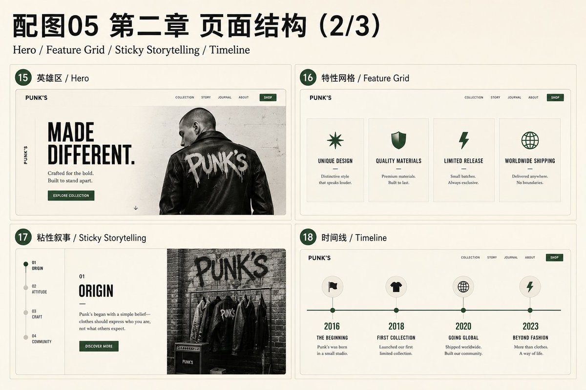
原文配图 · Adrian Punk (@AdrianPunk115) · 词条 18
在 Punk 的 About 页面添加一条 Vertical Timeline，每个节点包含年份、事件名称和两行说明；桌面端内容位于时间线右侧，手机端保持单列；使用细绿色线条和圆形节点，不要做成复杂路线地图。
在 Punk 的 About 页面添加一条 Vertical Timeline，每个节点包含年份、事件名称和两行说明；桌面端内容位于时间线右侧，手机端保持单列；使用细绿色线条和圆形节点，不要做成复杂路线地图。
19FAQ Section常见问题
把常见问题集中放在页面末段，通常通过折叠面板展开答案，帮助用户快速消除疑虑。
适合 服务说明、产品定价、课程、合作流程、常见疑问。
在 Punk 的 Contact 页面之前添加 FAQ Section， 包含 6 个问题，例如 Punk 接受什么项目、合作周期多久、是否提供开发、如何开始合作； 答案默认折叠，同一时间只允许打开一个问题，使用原生 button 并正确设置 aria-expanded。
在 Punk 的 Contact 页面之前添加 FAQ Section， 包含 6 个问题，例如 Punk 接受什么项目、合作周期多久、是否提供开发、如何开始合作； 答案默认折叠，同一时间只允许打开一个问题，使用原生 button 并正确设置 aria-expanded。
20Footer页脚
页面最底部的收尾区域，用来承载站点导航、社交链接、联系方式、版权信息和订阅入口。
适合 所有完整网站。
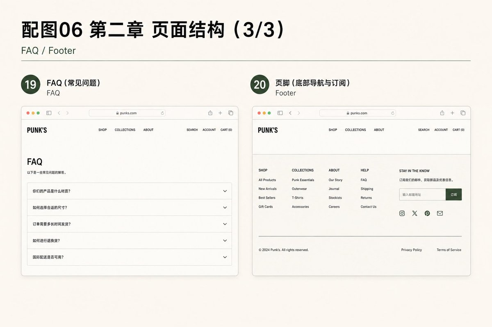
原文配图 · Adrian Punk (@AdrianPunk115) · 词条 20
为 Punk 的个人网站设计一个完整 Footer，左侧显示 Punk Logo 和一句简介，中间分为 Explore、Connect、Elsewhere 三组链接， 右侧显示邮箱和 Newsletter 订阅框，底部显示版权与隐私链接； 使用深绿色背景和米白文字，与页面主体形成明确收尾。
为 Punk 的个人网站设计一个完整 Footer，左侧显示 Punk Logo 和一句简介，中间分为 Explore、Connect、Elsewhere 三组链接， 右侧显示邮箱和 Newsletter 订阅框，底部显示版权与隐私链接； 使用深绿色背景和米白文字，与页面主体形成明确收尾。
21Sticky Navbar固定导航
页面向下滚动时，顶部导航仍然保持可见，适合长页面和需要频繁跳转的内容。
适合 长页面、单页网站、文档、Landing Page、作品集。
为 Punk 的网站添加 Sticky Navbar， 初始状态使用透明背景，滚动超过 40px 后变为米白背景并增加细边框和轻微 backdrop blur； 导航高度保持稳定，移动端使用 Hamburger Menu。
为 Punk 的网站添加 Sticky Navbar， 初始状态使用透明背景，滚动超过 40px 后变为米白背景并增加细边框和轻微 backdrop blur； 导航高度保持稳定，移动端使用 Hamburger Menu。
22Hamburger Menu汉堡菜单
手机端右上角常见的三条横线按钮，点击后展开或滑出完整导航。
适合 移动网站、小屏界面、极简导航、导航项较少的网站。
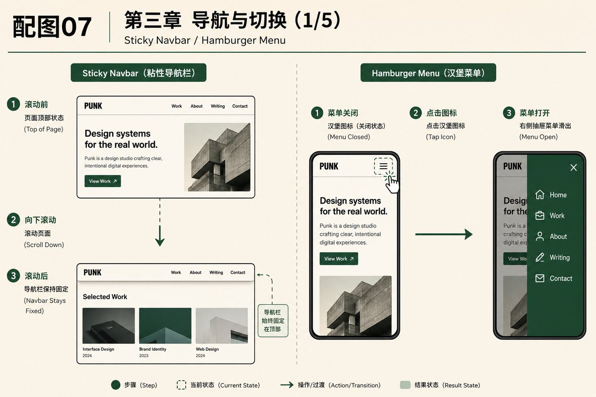
原文配图 · Adrian Punk (@AdrianPunk115) · 词条 22
Punk 网站在 768px 以下使用 Hamburger Menu， 右上角显示三条横线按钮，点击后从右侧滑出 Drawer， 包含 Home、Work、About、Writing 和 Contact； 打开后锁定背景滚动，支持 Esc 关闭、点击遮罩关闭和键盘焦点管理。
Punk 网站在 768px 以下使用 Hamburger Menu， 右上角显示三条横线按钮，点击后从右侧滑出 Drawer， 包含 Home、Work、About、Writing 和 Contact； 打开后锁定背景滚动，支持 Esc 关闭、点击遮罩关闭和键盘焦点管理。
23Breadcrumb面包屑
在页面顶部显示层级路径，例如“首页 › 作品 › AI 工具 › 项目详情”，帮助用户理解当前页面在网站结构中的位置。
适合 多层级网站、电商、博客、文档、项目详情页。
在 Punk 的项目详情页顶部添加 Breadcrumb， 路径为 Home › Work › AI Tools › Project Detail； 使用 nav aria-label="Breadcrumb" 和有序列表， 最后一项表示当前页面，不设置链接，并添加 aria-current="page"。
在 Punk 的项目详情页顶部添加 Breadcrumb， 路径为 Home › Work › AI Tools › Project Detail； 使用 nav aria-label="Breadcrumb" 和有序列表， 最后一项表示当前页面，不设置链接，并添加 aria-current="page"。
24Anchor Link锚点跳转
点击导航后不打开新页面，而是移动到当前页面中的指定区块。
适合 单页网站、长文章、Landing Page、文档目录、页面内目录。
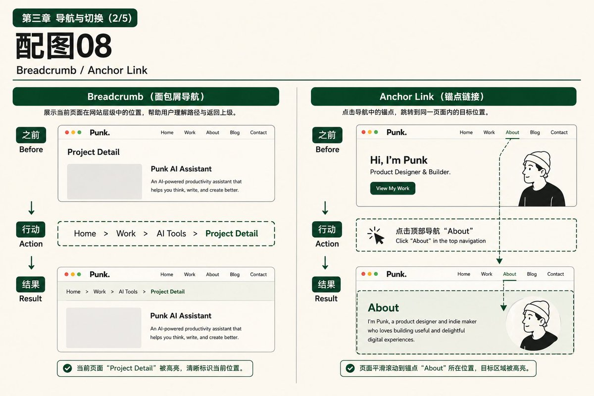
原文配图 · Adrian Punk (@AdrianPunk115) · 词条 24
为 Punk 的单页网站添加 Anchor Links，About、Work、Writing、Contact 分别链接到对应 section id； 点击后平滑滚动，到达区块时预留 Sticky Header 高度， 并让当前所在区块对应的导航项显示 active 状态。
为 Punk 的单页网站添加 Anchor Links，About、Work、Writing、Contact 分别链接到对应 section id； 点击后平滑滚动，到达区块时预留 Sticky Header 高度， 并让当前所在区块对应的导航项显示 active 状态。
25Tabs标签切换
多个标签共用同一块内容区域，一次只显示其中一个同等级视图。
适合 内容分类、数据视图、设置、作品分类、月度与年度图表。
在 Punk 的作品区添加 Tabs，标签为 All、Web、AI、Experiments，默认显示 All； 切换标签时只更新下方项目网格，不刷新整个页面； 使用 tablist、tab 和 tabpanel 语义，支持左右方向键切换并显示清晰 active 状态。
在 Punk 的作品区添加 Tabs，标签为 All、Web、AI、Experiments，默认显示 All； 切换标签时只更新下方项目网格，不刷新整个页面； 使用 tablist、tab 和 tabpanel 语义，支持左右方向键切换并显示清晰 active 状态。
26Sidebar Navigation侧边导航
把主要导航长期放在页面左侧或右侧，适合入口较多、层级较深的系统。
适合 后台、文档、设置页、复杂工具、个人内容管理。
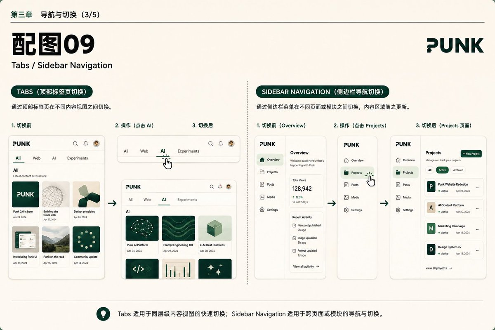
原文配图 · Adrian Punk (@AdrianPunk115) · 词条 26
为 Punk 的创作后台添加 Sidebar Navigation， 包含 Overview、Projects、Posts、Media、Analytics 和 Settings，当前页面使用绿色背景和图标强调，二级菜单允许折叠； 桌面端固定显示，手机端收起为 Drawer。
为 Punk 的创作后台添加 Sidebar Navigation， 包含 Overview、Projects、Posts、Media、Analytics 和 Settings，当前页面使用绿色背景和图标强调，二级菜单允许折叠； 桌面端固定显示，手机端收起为 Drawer。
27Mega Menu超级菜单
点击主导航后展开一个面积较大的多列菜单，可以同时展示分类、子页面和精选内容。
适合 内容很多的网站、产品矩阵、资源中心、复杂作品分类。
Punk 网站的 Work 导航项使用 Mega Menu， 展开后显示 Projects、Experiments、Resources 三列，并在右侧增加一个 Featured Project 预览； 菜单通过点击打开，不依赖 hover，支持键盘导航和 Esc 关闭，手机端改为 Accordion Menu。
Punk 网站的 Work 导航项使用 Mega Menu， 展开后显示 Projects、Experiments、Resources 三列，并在右侧增加一个 Featured Project 预览； 菜单通过点击打开，不依赖 hover，支持键盘导航和 Esc 关闭，手机端改为 Accordion Menu。
28Bottom Navigation底部导航
在手机屏幕底部长期显示三到五个最重要的入口，适合需要频繁切换核心区域的移动产品。
适合 移动 Web App、Dashboard、内容工具、创作工具。
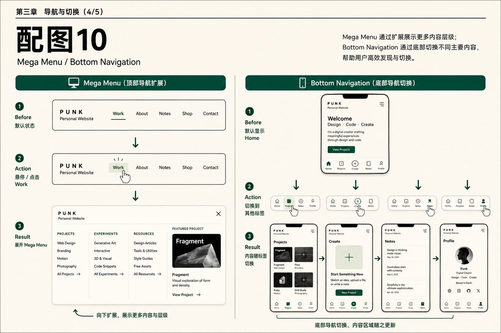
原文配图 · Adrian Punk (@AdrianPunk115) · 词条 28
为 Punk 的移动端创作工具添加 Bottom Navigation， 固定在屏幕底部，包含 Home、Projects、Create、Notes 和 Profile， 当前项使用绿色填充图标，并考虑 iPhone safe-area-inset-bottom； 桌面端不显示该组件。
为 Punk 的移动端创作工具添加 Bottom Navigation， 固定在屏幕底部，包含 Home、Projects、Create、Notes 和 Profile， 当前项使用绿色填充图标，并考虑 iPhone safe-area-inset-bottom； 桌面端不显示该组件。
29Pagination分页
把长列表拆成多个固定页面，用户通过页码或上一页、下一页进行切换。
适合 博客归档、搜索结果、后台表格、作品列表、数据量较大的列表。
为 Punk 的 Journal 文章列表添加 Pagination， 每页显示 10 篇文章，底部显示 Previous、页码和 Next， 当前页具有明显状态，并在 URL 查询参数中保存页码，例如 ?page=2； 按钮使用真实链接，便于刷新、分享和返回。
为 Punk 的 Journal 文章列表添加 Pagination， 每页显示 10 篇文章，底部显示 Previous、页码和 Next， 当前页具有明显状态，并在 URL 查询参数中保存页码，例如 ?page=2； 按钮使用真实链接，便于刷新、分享和返回。
30Back to Top返回顶部
页面滚动到一定距离后，右下角出现返回顶部按钮，帮助用户快速回到页面开头。
适合 长文章、长作品页、文档、长列表。
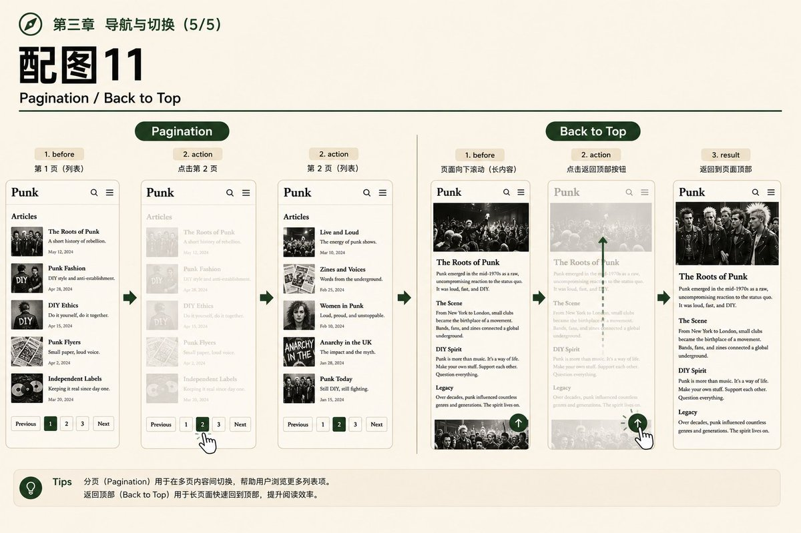
原文配图 · Adrian Punk (@AdrianPunk115) · 词条 30
为 Punk 的长篇文章页添加 Back to Top 按钮， 滚动超过 800px 后淡入显示并固定在右下角，点击后返回页面顶部； 按钮提供 aria-label="返回顶部"，并在 reduced motion 模式下取消平滑动画。
为 Punk 的长篇文章页添加 Back to Top 按钮， 滚动超过 800px 后淡入显示并固定在右下角，点击后返回页面顶部； 按钮提供 aria-label="返回顶部"，并在 reduced motion 模式下取消平滑动画。
31Modal模态框
一个覆盖在当前页面之上的对话框，背景被遮罩，用户需要先处理或关闭它才能回到页面。
适合 联系表单、确认操作、登录、快速预览、必须立即处理的任务。
Punk 网站点击 Contact 后打开 Modal， Modal 内包含姓名、邮箱、项目类型和留言； 打开时把键盘焦点移动到标题或第一个输入框，关闭后把焦点返回触发按钮； 使用原生 dialog 和 showModal()，支持 Esc 关闭，并阻止背景内容被键盘访问。
Punk 网站点击 Contact 后打开 Modal， Modal 内包含姓名、邮箱、项目类型和留言； 打开时把键盘焦点移动到标题或第一个输入框，关闭后把焦点返回触发按钮； 使用原生 dialog 和 showModal()，支持 Esc 关闭，并阻止背景内容被键盘访问。
32Drawer抽屉
一个从屏幕左侧、右侧或底部滑出的面板，可以展示导航、筛选、设置或详情。
适合 移动导航、筛选、设置、详情预览、购物车、通知中心。
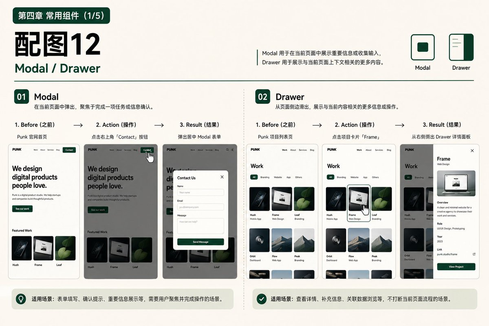
原文配图 · Adrian Punk (@AdrianPunk115) · 词条 32
Punk 的项目列表点击卡片后，从右侧打开一个 Project Detail Drawer，桌面端宽度为 420px， 显示封面、简介、技术栈和访问链接； 页面主体仍然可见但不可操作，手机端让 Drawer 从底部打开并接近全屏。
Punk 的项目列表点击卡片后，从右侧打开一个 Project Detail Drawer，桌面端宽度为 420px， 显示封面、简介、技术栈和访问链接； 页面主体仍然可见但不可操作，手机端让 Drawer 从底部打开并接近全屏。
33Accordion手风琴
多组标题纵向排列，点击标题后展开或收起对应内容。
适合 FAQ、移动菜单、筛选器、课程目录、分组说明。
为 Punk 的 FAQ 创建 Accordion，每个标题使用 button， 右侧显示加号或箭头，展开时更新 aria-expanded，并通过 aria-controls 关联内容面板； 同一时间只展开一个项目，动画控制在 200ms 左右。
为 Punk 的 FAQ 创建 Accordion，每个标题使用 button， 右侧显示加号或箭头，展开时更新 aria-expanded，并通过 aria-controls 关联内容面板； 同一时间只展开一个项目，动画控制在 200ms 左右。
34Tooltip气泡提示
鼠标悬停或键盘聚焦到图标时，旁边出现一小块简短说明。它只适合补充短信息。
适合 图标解释、术语补充、按钮名称、图表数据说明。
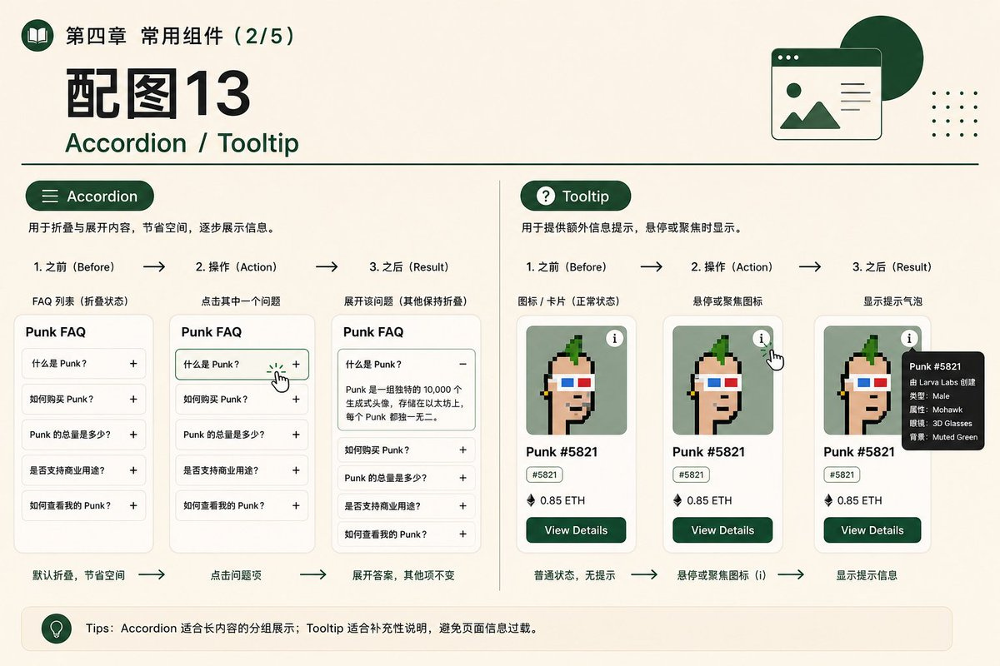
原文配图 · Adrian Punk (@AdrianPunk115) · 词条 34
在 Punk 的项目卡片图标上添加 Tooltip，鼠标 hover 或键盘 focus 时显示， 内容控制在一句话以内，Tooltip 不获得独立焦点，离开触发元素或按 Esc 后消失； 不要只支持 hover，触屏设备需要提供可理解的替代方式。
在 Punk 的项目卡片图标上添加 Tooltip，鼠标 hover 或键盘 focus 时显示， 内容控制在一句话以内，Tooltip 不获得独立焦点，离开触发元素或按 Esc 后消失； 不要只支持 hover，触屏设备需要提供可理解的替代方式。
35Toast轻提示
完成操作后在页面角落短暂出现的状态消息，不会像 Modal 一样中断用户。
适合 保存、复制、发布、删除、网络状态和轻量操作反馈。
Punk 后台保存文章后，在右上角显示 Success Toast“文章已保存”， Toast 包含状态图标、文字和关闭按钮，4 秒后自动消失； 错误 Toast 不要快速自动消失，并提供重试操作； 使用 aria-live 向辅助技术宣布状态。
Punk 后台保存文章后，在右上角显示 Success Toast“文章已保存”， Toast 包含状态图标、文字和关闭按钮，4 秒后自动消失； 错误 Toast 不要快速自动消失，并提供重试操作； 使用 aria-live 向辅助技术宣布状态。
36Carousel轮播图
在有限空间中轮流展示多个项目，通常带有左右箭头、圆点指示和当前序号。
适合 精选项目、客户评价、产品截图、活动 Banner。
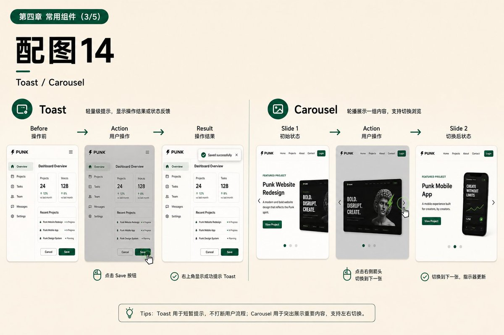
原文配图 · Adrian Punk (@AdrianPunk115) · 词条 36
在 Punk 首页添加 Featured Projects Carousel， 一次展示 1 个主项目和下一项目的一小部分预览，提供 Previous、Next 按钮和 01 / 05 序号； 默认不自动播放，支持触摸滑动和键盘操作，用户启用 reduced motion 时取消滑行动画。
在 Punk 首页添加 Featured Projects Carousel， 一次展示 1 个主项目和下一项目的一小部分预览，提供 Previous、Next 按钮和 01 / 05 序号； 默认不自动播放，支持触摸滑动和键盘操作，用户启用 reduced motion 时取消滑行动画。
37Lightbox图片灯箱
点击缩略图后，在遮罩层上放大显示原图，并支持关闭、切换和查看标题。
适合 摄影、AI 作品、插画、项目截图、视觉作品集。
为 Punk 的 AI Gallery 添加 Lightbox， 点击缩略图后全屏显示原图，支持左右切换、Esc 关闭和图片标题，打开后锁定背景滚动； 缩略图使用 button 或 link 触发，所有图片提供准确的 alt 文本。
为 Punk 的 AI Gallery 添加 Lightbox， 点击缩略图后全屏显示原图，支持左右切换、Esc 关闭和图片标题，打开后锁定背景滚动； 缩略图使用 button 或 link 触发，所有图片提供准确的 alt 文本。
38Form表单
由输入框、标签、选择器、复选框和提交按钮组成，用来完成联系、订阅、登录或设置等任务。
适合 联系、订阅、登录、搜索、预约、设置。
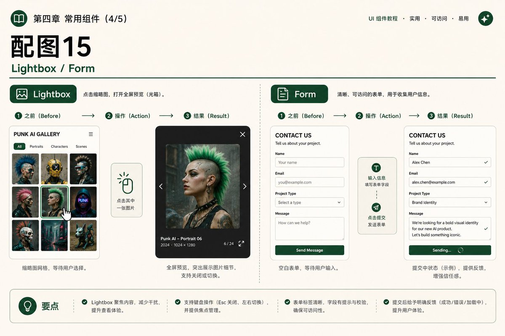
原文配图 · Adrian Punk (@AdrianPunk115) · 词条 38
为 Punk 的 Contact 页面创建一个可访问的联系表单， 字段包括 Name、Email、Project Type、Budget Range 和 Message； 每个输入框都有可见 label，必填项和错误信息清晰， 提交中显示 loading 状态，成功后显示 Toast，并在确认提交成功前保留用户输入内容。
为 Punk 的 Contact 页面创建一个可访问的联系表单， 字段包括 Name、Email、Project Type、Budget Range 和 Message； 每个输入框都有可见 label，必填项和错误信息清晰， 提交中显示 loading 状态，成功后显示 Toast，并在确认提交成功前保留用户输入内容。
39Command Palette命令面板
按下快捷键后弹出的快速搜索与操作面板，用户可以通过键盘跳转页面或执行命令。
适合 开发者工具、文档站、复杂个人网站、Dashboard、效率工具。
为 Punk 的网站添加 Command Palette，用户按 Command+K 或 Ctrl+K 后打开，可以搜索并执行 Go to Work、Open About、Read Journal、Toggle Theme 和 Contact Punk；支持上下方向键选择、Enter 执行、Esc 关闭，并按页面与操作分组显示结果。
为 Punk 的网站添加 Command Palette，用户按 Command+K 或 Ctrl+K 后打开，可以搜索并执行 Go to Work、Open About、Read Journal、Toggle Theme 和 Contact Punk；支持上下方向键选择、Enter 执行、Esc 关闭，并按页面与操作分组显示结果。
40Floating Action Button悬浮操作按钮
固定在界面角落的主要操作按钮，不随内容滚走，通常代表新增、创建或快速联系。
适合 Dashboard、移动工具、创作应用、快速联系、主要新增操作。
Punk｜中科大 MBA｜HerName 首席设计师｜Stanley 商学院执行院长｜ ｜AI提示词｜3个月赚了8位数｜Learn in Public｜@AdrianPunk115
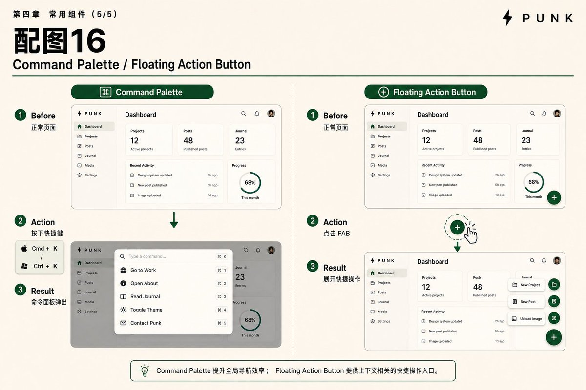
原文配图 · Adrian Punk (@AdrianPunk115) · 词条 40
请为 Punk 设计并实现一个响应式个人作品网站。 网站包含 Home、Work、Project Detail、About、Journal 和 Contact。 首页使用 Split-screen Hero：左侧展示 Punk 的姓名、身份介绍、简介和主要按钮，右侧展示抽象的网页界面与空间化视觉。Hero 下方使用 Bento Grid，展示 Featured Project、About、Skills、Latest Writing 和 Contact。 作品页面使用响应式 Card-based Layout，桌面端三列、平板端两列、手机端单列；AI 图片作品使用 Masonry Gallery，并保留不同图片的原始宽高比。 项目详情使用 Case Study Page，包含 Overview、Problem、Role、Process、Key Decisions、Solution、Outcome 和 Reflection，桌面端右侧提供 Sticky Table of Contents。 桌面端使用 Sticky Navbar，移动端使用 Hamburger Menu 并从右侧打开 Drawer；项目详情顶部显示 Breadcrumb；单页区块使用 Anchor Links。 联系表单使用 Modal，作品图片支持 Lightbox，保存和复制操作使用 Toast，FAQ 使用 Accordion，站内快速跳转使用 Command Palette。 整体使用米白背景、深绿色强调色和黑色正文，视觉元素采用低饱和抽象图形、半透明网页面板和空间层次；不要使用家居产品、办公桌摆拍、商业图库人物或卡通插画。 所有页面 Mobile-first，使用语义化 HTML、CSS Grid 和 Flexbox；交互组件支持键盘操作、清晰焦点状态和屏幕阅读器；尊重 prefers-reduced-motion；图片设置 width、height 和 alt，首屏以下图片使用 Lazy Loading。
请为 Punk 设计并实现一个响应式个人作品网站。 网站包含 Home、Work、Project Detail、About、Journal 和 Contact。 首页使用 Split-screen Hero：左侧展示 Punk 的姓名、身份介绍、简介和主要按钮，右侧展示抽象的网页界面与空间化视觉。Hero 下方使用 Bento Grid，展示 Featured Project、About、Skills、Latest Writing 和 Contact。 作品页面使用响应式 Card-based Layout，桌面端三列、平板端两列、手机端单列；AI 图片作品使用 Masonry Gallery，并保留不同图片的原始宽高比。 项目详情使用 Case Study Page，包含 Overview、Problem、Role、Process、Key Decisions、Solution、Outcome 和 Reflection，桌面端右侧提供 Sticky Table of Contents。 桌面端使用 Sticky Navbar，移动端使用 Hamburger Menu 并从右侧打开 Drawer；项目详情顶部显示 Breadcrumb；单页区块使用 Anchor Links。 联系表单使用 Modal，作品图片支持 Lightbox，保存和复制操作使用 Toast，FAQ 使用 Accordion，站内快速跳转使用 Command Palette。 整体使用米白背景、深绿色强调色和黑色正文，视觉元素采用低饱和抽象图形、半透明网页面板和空间层次；不要使用家居产品、办公桌摆拍、商业图库人物或卡通插画。 所有页面 Mobile-first，使用语义化 HTML、CSS Grid 和 Flexbox；交互组件支持键盘操作、清晰焦点状态和屏幕阅读器；尊重 prefers-reduced-motion；图片设置 width、height 和 alt，首屏以下图片使用 Lazy Loading。
PART III · 视觉词典（下篇）：40 个词条，覆盖网页的动态效果 — 滚动与动作（Scroll & Motion）、提示与加载（Feedback & Loading）、视觉风格（Visual Styles）、高级效果与体验（Advanced Effects & Quality）。每个词条同上一篇结构。
41Scroll Reveal滚动出现
元素在进入视口时逐渐出现，常见变化包括淡入、轻微上移或缩放。它的作用是建立阅读节奏，而不是让每个元素都表演一次。
适合 长页面、个人介绍、项目案例、数据区块、章节过渡。
为 Punk 的个人网站添加 Scroll Reveal。 标题、正文、项目卡片进入视口时淡入并向上移动 16px，动画时长控制在 400—600ms； 同一组卡片使用轻微错峰，不要让整页所有元素同时动画； 用户启用 prefers-reduced-motion 时取消位移动画，只保留即时显示或轻微淡入。
为 Punk 的个人网站添加 Scroll Reveal。 标题、正文、项目卡片进入视口时淡入并向上移动 16px，动画时长控制在 400—600ms； 同一组卡片使用轻微错峰，不要让整页所有元素同时动画； 用户启用 prefers-reduced-motion 时取消位移动画，只保留即时显示或轻微淡入。
42Parallax视差滚动
前景、中景和背景以不同速度移动，制造空间深度。效果越大越容易干扰阅读，因此适合用在局部视觉，而不是整页持续晃动。
适合 Hero、品牌故事、作品封面、沉浸式章节、视觉型个人网站。
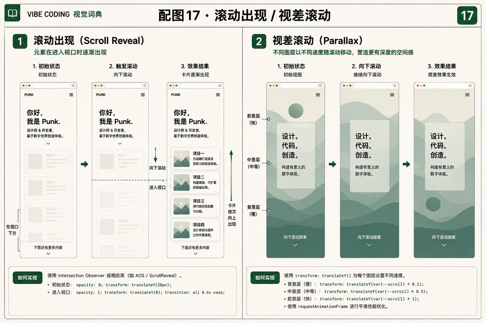
原文配图 · Adrian Punk (@AdrianPunk115) · 词条 42
为 Punk 的首页 Hero 添加轻量 Parallax。 背景抽象山形移动速度最慢，中层半透明网页面板使用中等速度，前景标题保持接近正常滚动速度； 移动距离控制在较小范围，禁止大幅缩放和快速位移； 移动端降低效果，reduced motion 模式下完全关闭视差。
为 Punk 的首页 Hero 添加轻量 Parallax。 背景抽象山形移动速度最慢，中层半透明网页面板使用中等速度，前景标题保持接近正常滚动速度； 移动距离控制在较小范围，禁止大幅缩放和快速位移； 移动端降低效果，reduced motion 模式下完全关闭视差。
43Scroll Progress Indicator阅读进度条
根据页面滚动位置显示阅读进度，常见形式是顶部细线、侧边刻度或圆形百分比。它告诉用户还剩多少内容。
适合 推特长文落地页、博客、案例研究、教程、文档。
在 Punk 的长篇文章页顶部添加 Scroll Progress Indicator。 使用 3px 深绿色进度线，从左向右反映当前阅读百分比； 导航栏保持 Sticky，进度条位于导航底部；不要遮挡内容，并使用 requestAnimationFrame 或 CSS Scroll-driven Animation 实现平滑更新。
在 Punk 的长篇文章页顶部添加 Scroll Progress Indicator。 使用 3px 深绿色进度线，从左向右反映当前阅读百分比； 导航栏保持 Sticky，进度条位于导航底部；不要遮挡内容，并使用 requestAnimationFrame 或 CSS Scroll-driven Animation 实现平滑更新。
44Scroll Snap滚动吸附
用户滚动后，内容会自动停在预设位置，像翻页一样对齐到某一张卡片或某一个完整章节。
适合 横向作品集、全屏章节、移动端卡片浏览、产品故事。
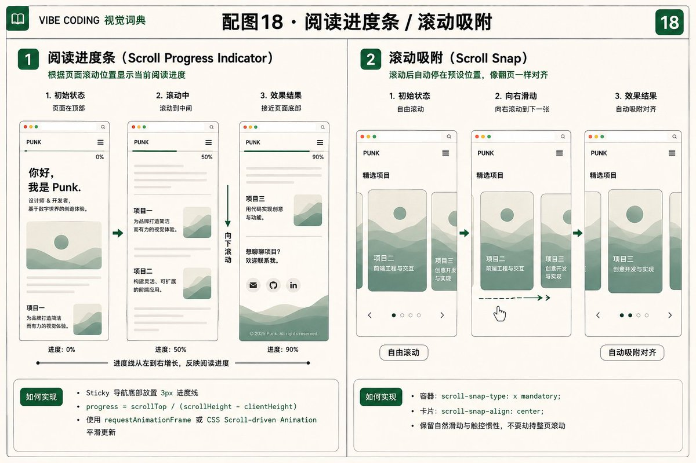
原文配图 · Adrian Punk (@AdrianPunk115) · 词条 44
为 Punk 的精选作品区添加 CSS Scroll Snap。 横向容器使用 scroll-snap-type: x mandatory，每个项目卡片使用 scroll-snap-align: center； 允许触摸滑动和触控板滚动，保留自然惯性； 不要劫持整个页面滚动，桌面端同时提供上一项和下一项按钮。
为 Punk 的精选作品区添加 CSS Scroll Snap。 横向容器使用 scroll-snap-type: x mandatory，每个项目卡片使用 scroll-snap-align: center； 允许触摸滑动和触控板滚动，保留自然惯性； 不要劫持整个页面滚动，桌面端同时提供上一项和下一项按钮。
45Horizontal Scroll横向滚动
内容沿水平方向浏览，可以显示一排项目、时间线或视觉画廊。它应当有明确的方向提示，否则用户容易不知道还能继续滑动。
适合 项目画廊、时间线、客户 Logo、移动端作品浏览、横向叙事。
为 Punk 的项目档案创建 Horizontal Scroll。 桌面端展示 3.5 张卡片，让下一张卡片露出一部分作为继续浏览提示； 支持触控板和触摸滑动，并提供左右箭头； 卡片保持键盘可聚焦，手机端使用自然横向滚动。
为 Punk 的项目档案创建 Horizontal Scroll。 桌面端展示 3.5 张卡片，让下一张卡片露出一部分作为继续浏览提示； 支持触控板和触摸滑动，并提供左右箭头； 卡片保持键盘可聚焦，手机端使用自然横向滚动。
46Infinite Scroll无限滚动
用户接近列表底部时自动加载下一批内容，不需要手动翻页。它适合连续消费内容，但不适合需要精确定位和返回某一页的任务。
适合 动态内容流、灵感墙、AI 图片库、社交列表、探索页。
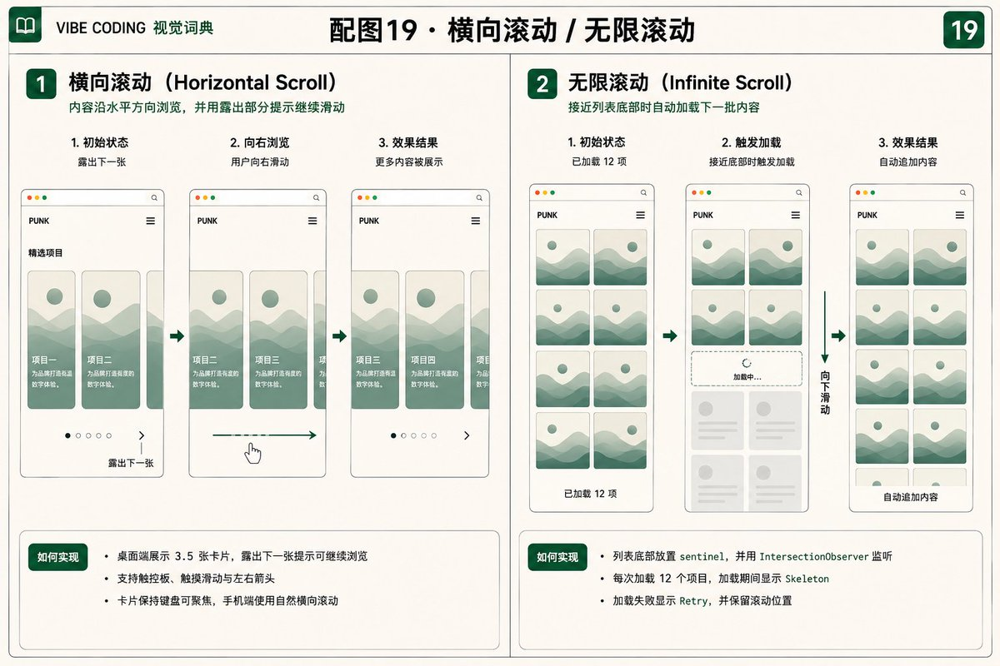
原文配图 · Adrian Punk (@AdrianPunk115) · 词条 46
为 Punk 的 AI 灵感流实现 Infinite Scroll。 每次加载 12 个项目，在列表底部设置 sentinel，并使用 IntersectionObserver 在 sentinel 接近视口时请求下一页； 加载期间显示 Skeleton；加载失败时显示 Retry 按钮； 保存滚动位置，避免返回页面时丢失当前位置。
为 Punk 的 AI 灵感流实现 Infinite Scroll。 每次加载 12 个项目，在列表底部设置 sentinel，并使用 IntersectionObserver 在 sentinel 接近视口时请求下一页； 加载期间显示 Skeleton；加载失败时显示 Retry 按钮； 保存滚动位置，避免返回页面时丢失当前位置。
47Marquee跑马灯
文字、Logo 或标签持续横向移动，形成动态信息带。现代网页通常使用 CSS 动画实现，而不是旧式 marquee 标签。
适合 客户 Logo、技能列表、活动信息、品牌口号、作品标签。
在 Punk 首页的 Hero 下方添加一个循环 Marquee，内容为 Design、Frontend、AI Prototyping、Writing、Creative Tools； 两组内容无缝衔接，移动速度缓慢；鼠标悬停时暂停； 内容必须在动画关闭时仍可阅读，reduced motion 模式下改为普通换行标签列表。
在 Punk 首页的 Hero 下方添加一个循环 Marquee，内容为 Design、Frontend、AI Prototyping、Writing、Creative Tools； 两组内容无缝衔接，移动速度缓慢；鼠标悬停时暂停； 内容必须在动画关闭时仍可阅读，reduced motion 模式下改为普通换行标签列表。
48Hover Micro-interaction悬停微交互
鼠标经过按钮、链接或卡片时发生细小变化，例如上移、边框加深、箭头移动或图片轻微放大。微交互用于确认“这个东西可以点”。
适合 项目卡片、按钮、链接、导航项、图片画廊。
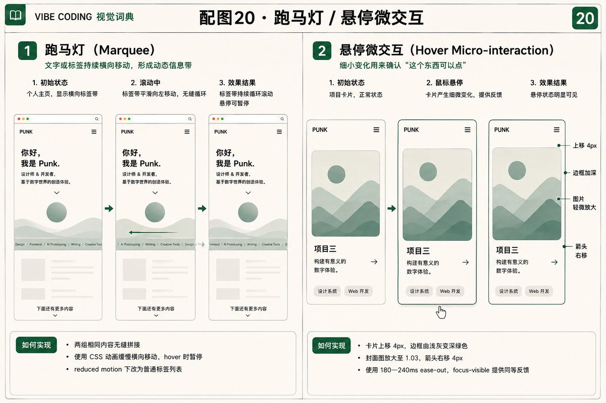
原文配图 · Adrian Punk (@AdrianPunk115) · 词条 48
为 Punk 的项目卡片添加 Hover Micro-interaction。 鼠标进入时卡片上移 4px，边框由浅灰变为深绿色，封面图轻微放大到 1.03，右下角箭头向右移动 4px； 动画使用 180—240ms ease-out； 键盘 focus-visible 状态提供同等清晰反馈，不要只依赖 hover。
为 Punk 的项目卡片添加 Hover Micro-interaction。 鼠标进入时卡片上移 4px，边框由浅灰变为深绿色，封面图轻微放大到 1.03，右下角箭头向右移动 4px； 动画使用 180—240ms ease-out； 键盘 focus-visible 状态提供同等清晰反馈，不要只依赖 hover。
49Staggered Animation错峰动画
同一组元素不是同时出现，而是按很短的间隔依次进入。它能强化顺序和节奏，但间隔过长会让页面显得迟钝。
适合 卡片网格、菜单项、数据列表、Logo 墙、功能模块。
为 Punk 的四张能力卡片添加 Staggered Entrance。 第一张进入视口后开始动画，其余卡片每隔 70ms 依次淡入并上移 12px；总等待时间不要超过 300ms； 重复滚动时不要反复播放；reduced motion 模式下让所有卡片直接显示。
为 Punk 的四张能力卡片添加 Staggered Entrance。 第一张进入视口后开始动画，其余卡片每隔 70ms 依次淡入并上移 12px；总等待时间不要超过 300ms； 重复滚动时不要反复播放；reduced motion 模式下让所有卡片直接显示。
50Scroll-driven Animation滚动驱动动画
动画进度由滚动位置决定，而不是由固定时间决定。例如滚动到章节中段时，进度线正好走到一半。
适合 进度图、产品拆解、数字叙事、背景变化、章节动画。
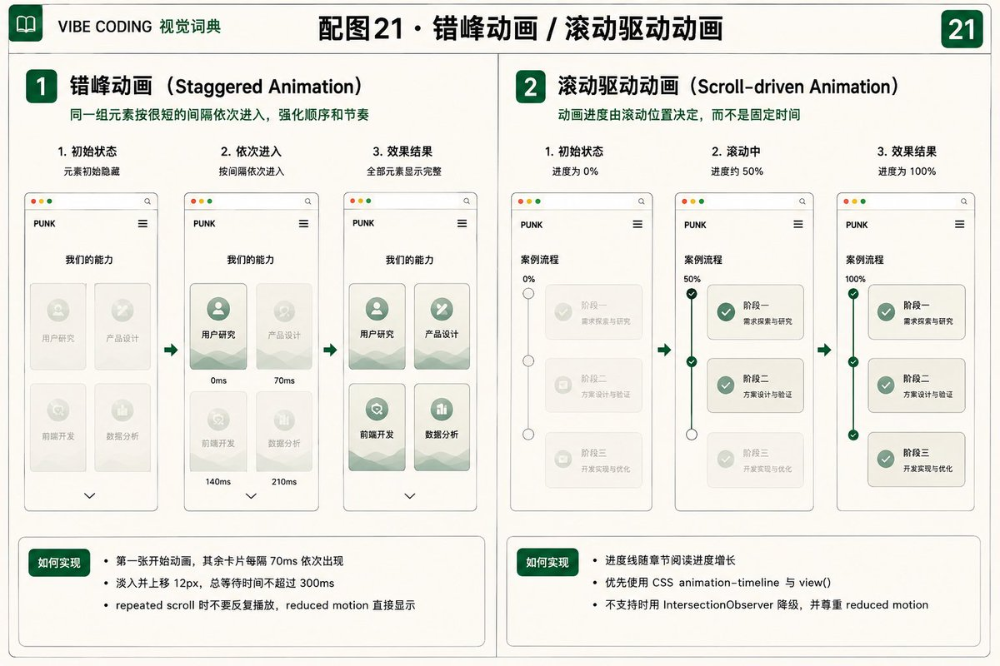
原文配图 · Adrian Punk (@AdrianPunk115) · 词条 50
在 Punk 的项目案例页使用 Scroll-driven Animation。 滚动经过 Process 章节时，左侧进度线随章节阅读进度增长，右侧三个原型面板依次从低透明度变为完全可见； 优先使用 CSS animation-timeline 和 view()，为不支持的浏览器提供 IntersectionObserver 降级方案，并尊重 reduced motion。
在 Punk 的项目案例页使用 Scroll-driven Animation。 滚动经过 Process 章节时，左侧进度线随章节阅读进度增长，右侧三个原型面板依次从低透明度变为完全可见； 优先使用 CSS animation-timeline 和 view()，为不支持的浏览器提供 IntersectionObserver 降级方案，并尊重 reduced motion。
51Skeleton Screen骨架屏
真实内容加载前，先显示与最终布局相似的灰色占位结构。它不能让网络变快，但能减少页面突然跳动和空白等待感。
适合 项目卡片、文章列表、Dashboard、详情页、图片画廊。
为 Punk 的项目列表设计 Skeleton Screen。 骨架结构必须与最终卡片尺寸一致，包含封面占位、标题线、两行文字和标签占位； 使用低对比度灰绿色，不要显示虚假文字； 内容加载完成后使用短暂淡入替换，避免布局位移。
为 Punk 的项目列表设计 Skeleton Screen。 骨架结构必须与最终卡片尺寸一致，包含封面占位、标题线、两行文字和标签占位； 使用低对比度灰绿色，不要显示虚假文字； 内容加载完成后使用短暂淡入替换，避免布局位移。
52Lazy Loading懒加载
首屏之外的图片、视频或模块在接近视口时才加载，减少初始页面需要下载的资源。
适合 长页面、图片库、作品集、嵌入视频、文章推荐区。
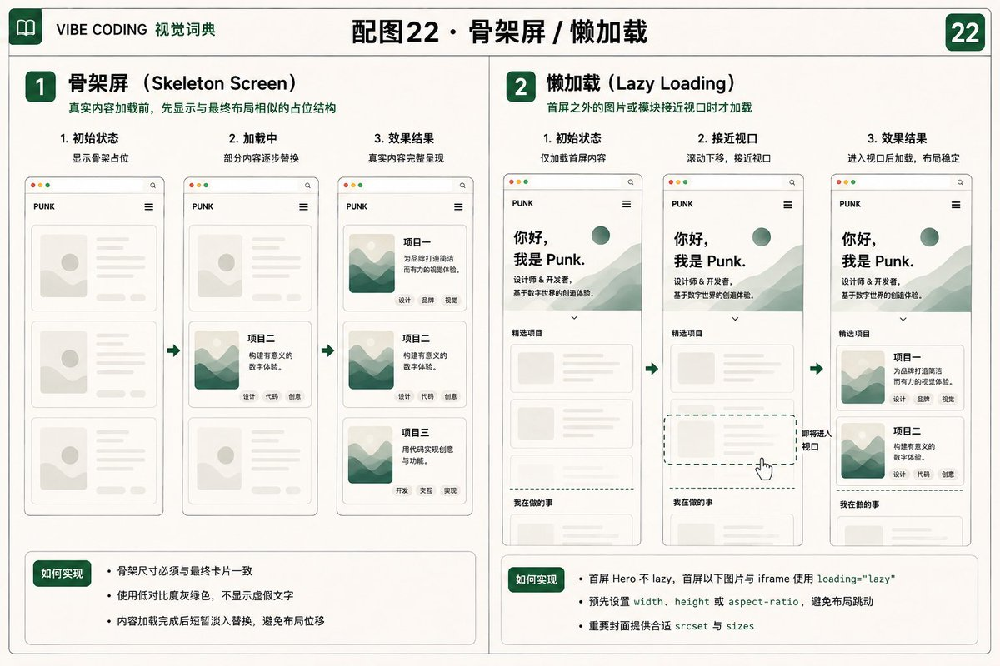
原文配图 · Adrian Punk (@AdrianPunk115) · 词条 52
为 Punk 的作品集实现 Lazy Loading。 首屏 Hero 图片正常加载，不要设置 lazy； 首屏以下的 img 和 iframe 使用 loading="lazy"；为图片预先设置 width、height 或 aspect-ratio，避免布局跳动； 重要项目封面提供合适的 srcset 和 sizes，不要把所有资源都延迟加载。
为 Punk 的作品集实现 Lazy Loading。 首屏 Hero 图片正常加载，不要设置 lazy； 首屏以下的 img 和 iframe 使用 loading="lazy"；为图片预先设置 width、height 或 aspect-ratio，避免布局跳动； 重要项目封面提供合适的 srcset 和 sizes，不要把所有资源都延迟加载。
53Loading Spinner加载转圈
用循环旋转图标表示系统正在处理，但不说明还需要多久。它只适合等待时间短、进度不可预测的任务。
适合 短请求、局部刷新、按钮处理、图片生成准备阶段。
Punk 网站提交短请求时显示 Loading Spinner。 Spinner 只出现在正在更新的局部区域，不要遮罩整个页面； 同时显示“正在加载项目”文字； 超过 8 秒后追加更明确的等待说明和取消入口； 动画在 reduced motion 模式下改为静态状态图标。
Punk 网站提交短请求时显示 Loading Spinner。 Spinner 只出现在正在更新的局部区域，不要遮罩整个页面； 同时显示“正在加载项目”文字； 超过 8 秒后追加更明确的等待说明和取消入口； 动画在 reduced motion 模式下改为静态状态图标。
54Progress Bar进度条
显示任务已经完成多少，适合能够计算进度的上传、生成或多步骤任务。确定型进度条比不断转圈更能建立预期。
适合 文件上传、AI 生成、导出、数据同步、安装流程。
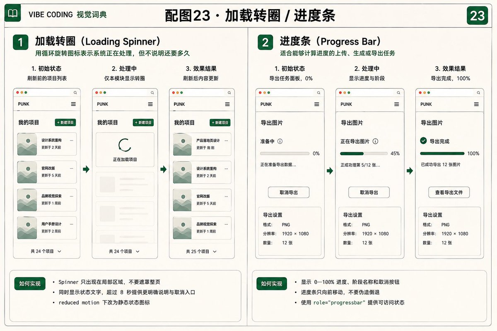
原文配图 · Adrian Punk (@AdrianPunk115) · 词条 54
为 Punk 的 AI 图片导出任务添加 Determinate Progress Bar。显示 0—100% 进度、当前阶段名称和取消按钮； 进度条只向前移动，不要伪造倒退； 完成后切换为 Success State，失败后保留当前进度并显示 Retry；使用 role="progressbar" 提供可访问状态。
为 Punk 的 AI 图片导出任务添加 Determinate Progress Bar。显示 0—100% 进度、当前阶段名称和取消按钮； 进度条只向前移动，不要伪造倒退； 完成后切换为 Success State，失败后保留当前进度并显示 Retry；使用 role="progressbar" 提供可访问状态。
55Loading Button加载按钮
用户点击提交后，按钮进入处理中状态，通常禁用重复点击，并把原文字替换为加载图标和状态说明。
适合 保存、发布、登录、生成、上传、表单提交。
Punk 的联系表单点击 Send Message 后，把按钮切换为 Loading Button：禁用重复提交，文字改为“Sending…”并显示小型 Spinner； 保持按钮宽度不变，避免界面跳动； 请求成功后显示“Sent”，失败后恢复可点击状态并显示错误原因。
Punk 的联系表单点击 Send Message 后，把按钮切换为 Loading Button：禁用重复提交，文字改为“Sending…”并显示小型 Spinner； 保持按钮宽度不变，避免界面跳动； 请求成功后显示“Sent”，失败后恢复可点击状态并显示错误原因。
56Empty State空状态
列表或页面没有内容时的正式界面，而不是一片空白。好的空状态会解释为什么为空，并给出下一步行动。
适合 新用户后台、搜索无结果、收藏夹、项目列表、通知中心。
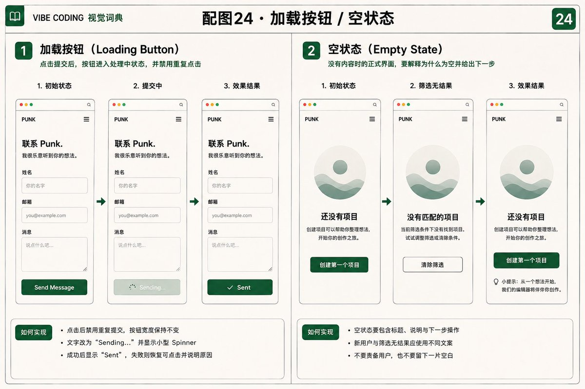
原文配图 · Adrian Punk (@AdrianPunk115) · 词条 56
为 Punk 的新项目页面设计 Empty State。 中心显示一个简洁抽象图形、标题“还没有项目”、一句说明和“创建第一个项目”按钮； 如果是筛选导致无结果，改为“没有匹配的项目”，并提供清除筛选按钮；不要使用消极或责备用户的文案。
为 Punk 的新项目页面设计 Empty State。 中心显示一个简洁抽象图形、标题“还没有项目”、一句说明和“创建第一个项目”按钮； 如果是筛选导致无结果，改为“没有匹配的项目”，并提供清除筛选按钮；不要使用消极或责备用户的文案。
57Error State错误状态
任务失败后明确告诉用户发生了什么、哪些内容受到影响，以及是否需要重新操作。错误状态不应只有红色或一个错误代码。
适合 表单失败、加载失败、权限问题、断网、404 与 500 页面。
为 Punk 的项目加载失败设计 Error State。 显示清晰标题“项目暂时无法加载”、简短原因、Retry 按钮和返回项目列表链接；保留已经加载的其他内容，不要清空整个页面； 错误信息使用图标、文字和颜色共同表达，并通过 role="alert" 或合适的 live region 通知辅助技术。
为 Punk 的项目加载失败设计 Error State。 显示清晰标题“项目暂时无法加载”、简短原因、Retry 按钮和返回项目列表链接；保留已经加载的其他内容，不要清空整个页面； 错误信息使用图标、文字和颜色共同表达，并通过 role="alert" 或合适的 live region 通知辅助技术。
58Retry State重试状态
错误发生后提供重新执行操作的入口，并在重试过程中显示新的加载状态。它是错误恢复流程，而不仅是一颗按钮。
适合 网络请求、图片上传、AI 生成、同步任务、列表加载。
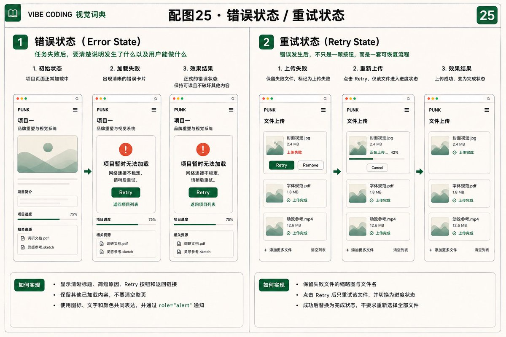
原文配图 · Adrian Punk (@AdrianPunk115) · 词条 58
Punk 的图片上传失败后显示 Retry State。 保留失败文件的缩略图和文件名，标出“上传失败”，提供 Retry 和 Remove 两个操作； 点击 Retry 后只重新上传该文件，并切换为进度状态； 成功后替换为完成状态，不要要求用户重新选择所有文件。
Punk 的图片上传失败后显示 Retry State。 保留失败文件的缩略图和文件名，标出“上传失败”，提供 Retry 和 Remove 两个操作； 点击 Retry 后只重新上传该文件，并切换为进度状态； 成功后替换为完成状态，不要要求用户重新选择所有文件。
59Optimistic UI乐观更新
用户操作后，界面先假设操作会成功并立即更新，再在后台发送请求。失败时需要撤销变化并说明原因。
适合 点赞、收藏、简单状态切换、排序、轻量编辑。
Punk 的项目收藏按钮使用 Optimistic UI。 点击后立刻把图标切换为已收藏并更新计数，同时后台发送请求； 请求失败时恢复原状态，显示非阻塞错误提示并提供重试； 不要把支付、删除账号等不可逆或高风险操作做成乐观更新。
Punk 的项目收藏按钮使用 Optimistic UI。 点击后立刻把图标切换为已收藏并更新计数，同时后台发送请求； 请求失败时恢复原状态，显示非阻塞错误提示并提供重试； 不要把支付、删除账号等不可逆或高风险操作做成乐观更新。
60Inline Validation行内验证
用户输入时或离开字段后，在输入框附近显示具体错误，而不是提交后只在页面顶部说“表单有问题”。
适合 注册、联系表单、支付、设置、搜索条件。
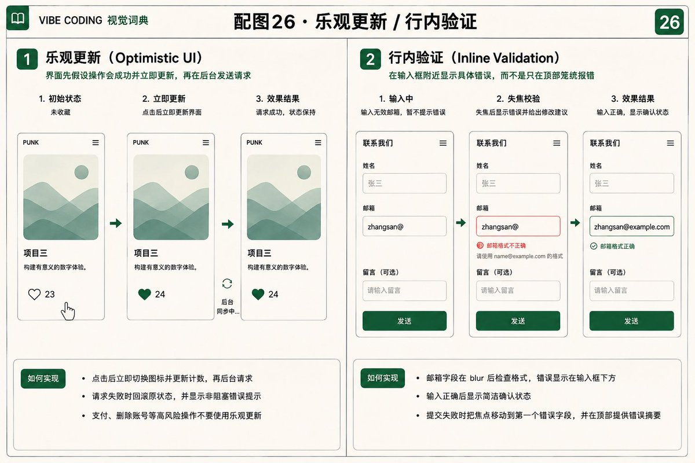
原文配图 · Adrian Punk (@AdrianPunk115) · 词条 60
为 Punk 的 Contact Form 添加 Inline Validation。 邮箱字段在 blur 后检查格式，错误信息显示在输入框下方并说明如何修正；输入正确后显示简洁确认状态； 不要在用户输入第一个字符时立刻报错；提交失败时把焦点移动到第一个错误字段，并在顶部提供错误摘要。
为 Punk 的 Contact Form 添加 Inline Validation。 邮箱字段在 blur 后检查格式，错误信息显示在输入框下方并说明如何修正；输入正确后显示简洁确认状态； 不要在用户输入第一个字符时立刻报错；提交失败时把焦点移动到第一个错误字段，并在顶部提供错误摘要。
61Minimalism极简主义
减少非必要颜色、装饰和组件，通过留白、字体层级和少量重点内容建立秩序。极简不等于什么都没有，而是每个元素都有理由存在。
适合 个人主页、设计师作品集、产品介绍、写作网站、高端品牌。
为 Punk 设计一个 Minimalist Portfolio。 使用米白背景、黑色正文和单一深绿色强调色，限制字体、圆角和阴影种类；首页只保留姓名、身份、精选项目和联系入口； 通过大留白和清晰排版建立层级，不要加入多余渐变、发光效果或装饰图标。
为 Punk 设计一个 Minimalist Portfolio。 使用米白背景、黑色正文和单一深绿色强调色，限制字体、圆角和阴影种类；首页只保留姓名、身份、精选项目和联系入口； 通过大留白和清晰排版建立层级，不要加入多余渐变、发光效果或装饰图标。
62Editorial Design编辑杂志风
借鉴杂志和出版物的排版方式，强调大标题、图文比例、栏目节奏、页码和引语。
适合 个人品牌、文章站、摄影集、案例研究、文化内容。
为 Punk 的 Journal 设计 Editorial Layout。 使用超大文章标题、窄正文栏、跨栏图片、章节编号、首字下沉和 pull quote；正文保持舒适行长和行高； 不要把每段内容都放进卡片，让页面更接近现代独立杂志。
为 Punk 的 Journal 设计 Editorial Layout。 使用超大文章标题、窄正文栏、跨栏图片、章节编号、首字下沉和 pull quote；正文保持舒适行长和行高； 不要把每段内容都放进卡片，让页面更接近现代独立杂志。
63Swiss Style瑞士风
强调网格、无衬线字体、客观排版、清晰对齐和有限颜色。它通常看起来理性、精确、系统化。
适合 设计工作室、建筑网站、作品目录、品牌系统、活动海报页。
为 Punk 的作品索引使用 Swiss Style。 采用严格的 12 列网格、左对齐无衬线字体、明显编号和细分隔线； 颜色仅使用米白、黑和深绿色； 项目信息按年份、类别和角色对齐排列，避免装饰性手写字体与复杂阴影。
为 Punk 的作品索引使用 Swiss Style。 采用严格的 12 列网格、左对齐无衬线字体、明显编号和细分隔线； 颜色仅使用米白、黑和深绿色； 项目信息按年份、类别和角色对齐排列，避免装饰性手写字体与复杂阴影。
64Glassmorphism玻璃拟态
使用半透明面板、背景模糊、细边框和层叠关系，营造玻璃悬浮感。玻璃面板必须有足够对比度，不能让文字融进背景。
适合 AI 产品、科技首页、数据面板、空间化 Hero、控制中心。
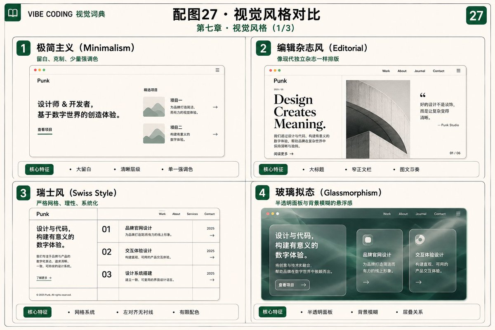
原文配图 · Adrian Punk (@AdrianPunk115) · 词条 64
为 Punk 的 AI 工具首页添加克制的 Glassmorphism。 深绿色抽象背景上叠加两到三层半透明面板，使用 backdrop-filter: blur(16px)、低透明白色背景和细亮边框； 正文区域保持高对比度，不要让所有卡片都透明，也不要使用过度霓虹发光。
为 Punk 的 AI 工具首页添加克制的 Glassmorphism。 深绿色抽象背景上叠加两到三层半透明面板，使用 backdrop-filter: blur(16px)、低透明白色背景和细亮边框； 正文区域保持高对比度，不要让所有卡片都透明，也不要使用过度霓虹发光。
65Neo-brutalism新野兽派
使用粗边框、高对比配色、直接排版和明显阴影，保留原始感，但比早期网页野兽派更系统、更适合产品界面。
适合 创作者网站、实验产品、活动页、年轻品牌、独立工具。
为 Punk 的实验项目页使用 Neo-brutalist Style。 采用粗黑边框、硬阴影、大字号标题和深绿色重点按钮； 组件保持清晰网格与可读性
为 Punk 的实验项目页使用 Neo-brutalist Style。 采用粗黑边框、硬阴影、大字号标题和深绿色重点按钮； 组件保持清晰网格与可读性
66Dark Mode深色模式
使用深色背景与浅色文字，降低暗环境中的强光感。它不是简单把黑白反转，而是要重新调整对比度、阴影、边框和图片。
适合 开发者工具、创作后台、媒体产品、夜间阅读、AI 应用。
为 Punk 网站实现完整 Dark Mode。使用 prefers-color-scheme 读取系统偏好，并提供手动切换和本地保存； 深色背景避免纯黑，正文使用柔和浅灰，深绿色调整为更亮的可见色；表单、滚动条和原生控件同步 color-scheme； 检查两种模式下的对比度和图片表现。
为 Punk 网站实现完整 Dark Mode。使用 prefers-color-scheme 读取系统偏好，并提供手动切换和本地保存； 深色背景避免纯黑，正文使用柔和浅灰，深绿色调整为更亮的可见色；表单、滚动条和原生控件同步 color-scheme； 检查两种模式下的对比度和图片表现。
67Monochrome / Duotone单色与双色
用一种主色或两种颜色控制整个视觉系统，通过明度、面积和材质变化建立层次。
适合 品牌主页、摄影网站、作品目录、专题页、极简产品。
为 Punk 的个人网站使用 Monochrome + Duotone 视觉系统。 全站以米白、黑和深绿色构成，项目图片转换为低饱和绿色双色调， 鼠标悬停后恢复少量原色；保证文字、边框和按钮层级清楚，不要让所有元素使用相同深浅。
为 Punk 的个人网站使用 Monochrome + Duotone 视觉系统。 全站以米白、黑和深绿色构成，项目图片转换为低饱和绿色双色调， 鼠标悬停后恢复少量原色；保证文字、边框和按钮层级清楚，不要让所有元素使用相同深浅。
68Gradient Mesh网格渐变
多个柔和色块在页面中交融，形成具有空间感的抽象背景。它比普通线性渐变更自然，但容易抢走正文注意力。
适合 Hero 背景、AI 产品、活动页、抽象个人品牌、登录页。
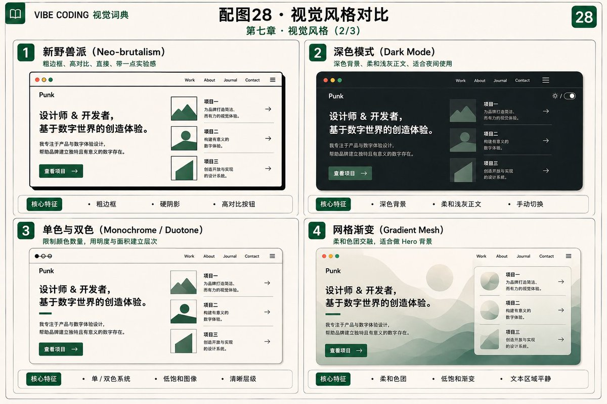
原文配图 · Adrian Punk (@AdrianPunk115) · 词条 68
为 Punk 首页 Hero 创建低饱和 Gradient Mesh 背景。 使用米白、灰绿和深绿色的柔和色团，边缘模糊并缓慢漂移； 文字区域保持相对平静，确保标题对比度；动画幅度很小，移动端使用静态背景，reduced motion 模式下关闭漂移动画。
为 Punk 首页 Hero 创建低饱和 Gradient Mesh 背景。 使用米白、灰绿和深绿色的柔和色团，边缘模糊并缓慢漂移； 文字区域保持相对平静，确保标题对比度；动画幅度很小，移动端使用静态背景，reduced motion 模式下关闭漂移动画。
69Grain / Noise Texture颗粒与噪点
在纯色或渐变上叠加细小颗粒，减少数字画面的塑料感，增加印刷、胶片或纸张质感。
适合 编辑设计、品牌网站、抽象背景、海报式 Hero、作品封面。
在 Punk 网站的米白背景和深绿色 Hero 上添加非常轻的 Grain Texture。 噪点透明度保持低，使用可重复的小型纹理或 CSS/SVG filter，不影响文字清晰度；不要给表单和正文区域增加明显颗粒； 移动端控制纹理资源大小，避免使用超大背景图片。
在 Punk 网站的米白背景和深绿色 Hero 上添加非常轻的 Grain Texture。 噪点透明度保持低，使用可重复的小型纹理或 CSS/SVG filter，不影响文字清晰度；不要给表单和正文区域增加明显颗粒； 移动端控制纹理资源大小，避免使用超大背景图片。
70Neumorphism / Soft UI新拟态
通过同色系的亮暗阴影，让按钮和面板像从背景中凸起或凹下。它视觉柔和，但边界和可访问性容易不足。
适合 小型控制组件、播放器、实验界面、展示型仪表盘。
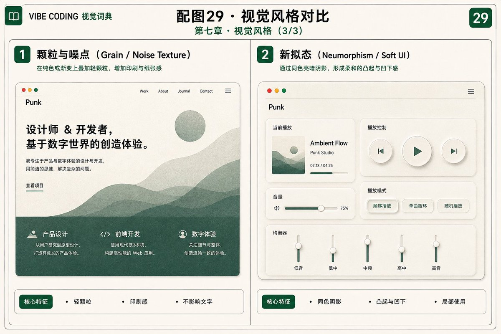
原文配图 · Adrian Punk (@AdrianPunk115) · 词条 70
为 Punk 的实验性音乐控制器使用局部 Neumorphism。 仅对播放、音量和模式按钮使用同色亮暗阴影，保留清晰文字、图标和 focus outline； 主要导航、表单与长文本不要使用新拟态；按下状态需要通过阴影、位置和颜色共同表达。
为 Punk 的实验性音乐控制器使用局部 Neumorphism。 仅对播放、音量和模式按钮使用同色亮暗阴影，保留清晰文字、图标和 focus outline； 主要导航、表单与长文本不要使用新拟态；按下状态需要通过阴影、位置和颜色共同表达。
71Custom Cursor自定义光标
用自定义圆点、文字或预览替代或补充系统光标，常用于展示当前可执行动作，例如 View、Drag 或 Open。
适合 创意作品集、图片画廊、实验网站、拖拽区域。
为 Punk 的桌面作品画廊添加 Custom Cursor。 默认显示小型绿色圆点，悬停项目图片时扩展并显示“View”，进入横向画廊时显示“Drag”； 保留原生光标作为可用后备，触屏设备不启用；不要让自定义光标产生明显延迟，也不要遮挡表单与正文。
为 Punk 的桌面作品画廊添加 Custom Cursor。 默认显示小型绿色圆点，悬停项目图片时扩展并显示“View”，进入横向画廊时显示“Drag”； 保留原生光标作为可用后备，触屏设备不启用；不要让自定义光标产生明显延迟，也不要遮挡表单与正文。
72Magnetic Button磁吸按钮
鼠标靠近按钮时，按钮或内部文字轻微朝光标方向移动，形成被吸引的感觉。
适合 主要 CTA、作品入口、联系按钮、创意首页。
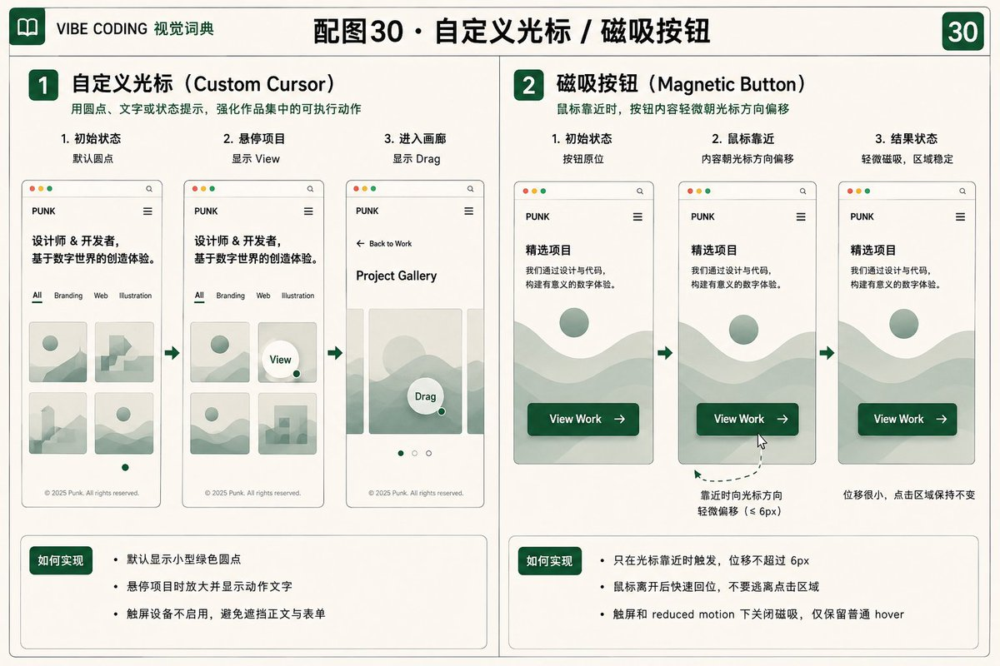
原文配图 · Adrian Punk (@AdrianPunk115) · 词条 72
为 Punk 首页的 View Work 按钮添加轻量 Magnetic Effect。 只有当光标距离按钮较近时，按钮内容最多偏移 6px，鼠标离开后快速回到原位；按钮本身不能逃离点击区域； 触屏和 reduced motion 模式下关闭磁吸，只保留普通 hover 状态。
为 Punk 首页的 View Work 按钮添加轻量 Magnetic Effect。 只有当光标距离按钮较近时，按钮内容最多偏移 6px，鼠标离开后快速回到原位；按钮本身不能逃离点击区域； 触屏和 reduced motion 模式下关闭磁吸，只保留普通 hover 状态。
73Tilt Card三维倾斜卡片 3D
卡片根据光标位置轻微旋转，并改变内部层次或高光，形成具有深度的立体反馈。
适合 精选项目、产品卡片、收藏卡、视觉作品、实验性主页。
为 Punk 的 Featured Project 卡片添加 3D Tilt。 光标移动时 rotateX 和 rotateY 最大不超过 5deg，封面、文字和高光使用很小的 Z 轴层次；鼠标离开后平滑归位； 移动端和 reduced motion 模式关闭倾斜，卡片点击区域保持稳定。
为 Punk 的 Featured Project 卡片添加 3D Tilt。 光标移动时 rotateX 和 rotateY 最大不超过 5deg，封面、文字和高光使用很小的 Z 轴层次；鼠标离开后平滑归位； 移动端和 reduced motion 模式关闭倾斜，卡片点击区域保持稳定。
74Spotlight Hover聚光灯悬停
光标经过大卡片或网格时，局部出现柔和光斑，突出当前区域并弱化周围内容。
适合 Dashboard、深色界面、功能网格、项目卡片、定价表。
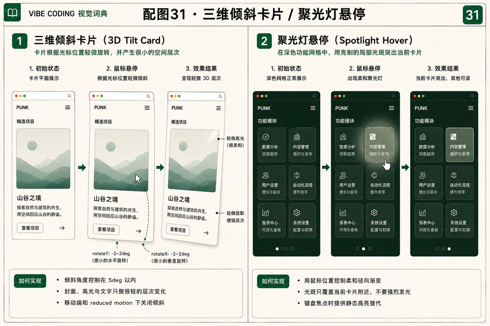
原文配图 · Adrian Punk (@AdrianPunk115) · 词条 74
在 Punk 的深色功能网格上添加 Spotlight Hover。 使用鼠标位置控制径向渐变，光斑范围只覆盖当前卡片附近，亮度克制； 焦点进入卡片时提供静态高亮替代；不要使用持续追踪的强烈发光，也不要降低文字对比度。
在 Punk 的深色功能网格上添加 Spotlight Hover。 使用鼠标位置控制径向渐变，光斑范围只覆盖当前卡片附近，亮度克制； 焦点进入卡片时提供静态高亮替代；不要使用持续追踪的强烈发光，也不要降低文字对比度。
75Image / Text Mask图片与文字蒙版
让图片或动态纹理只显示在文字、圆形或自定义形状内部，制造强烈但可控的视觉焦点。
适合 Hero 大标题、项目封面、章节数字、品牌标语。
为 Punk 首页标题“MAKE IDEAS VISIBLE”添加 Text Mask，低饱和抽象动画只显示在文字内部； 在不支持 background-clip: text 的环境中回退为深绿色实心文字； 标题必须保持可选择、可读和语义化，不要把重要文字只做成图片。
为 Punk 首页标题“MAKE IDEAS VISIBLE”添加 Text Mask，低饱和抽象动画只显示在文字内部； 在不支持 background-clip: text 的环境中回退为深绿色实心文字； 标题必须保持可选择、可读和语义化，不要把重要文字只做成图片。
76Clip-path Reveal裁切揭示
元素通过圆形、矩形或多边形裁切区域逐渐展开，像幕布被打开一样展示图片或页面。
适合 项目切换、图片入场、章节过渡、按钮预览、全屏菜单。
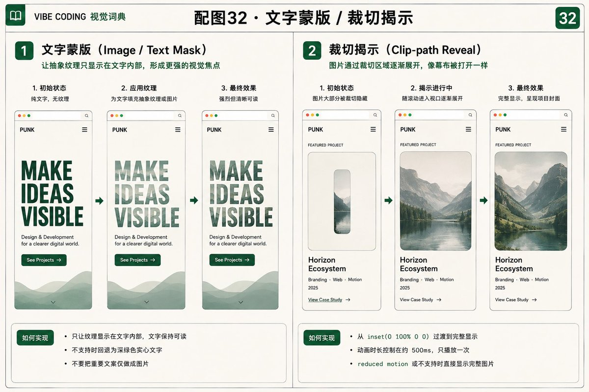
原文配图 · Adrian Punk (@AdrianPunk115) · 词条 76
为 Punk 的项目封面添加 Clip-path Reveal。 图片进入视口时从 inset(0 100% 0 0) 过渡到完整显示，持续 500ms； 动画只播放一次；为不支持或 reduced motion 用户直接显示完整图片；不要同时叠加大幅位移和缩放。
为 Punk 的项目封面添加 Clip-path Reveal。 图片进入视口时从 inset(0 100% 0 0) 过渡到完整显示，持续 500ms； 动画只播放一次；为不支持或 reduced motion 用户直接显示完整图片；不要同时叠加大幅位移和缩放。
77WebGL / Three.js Hero
使用 GPU 渲染实时 3D、粒子、材质或交互场景，可以创造普通 CSS 难以实现的空间视觉。
适合 科技产品、AI 品牌、实验作品集、数据艺术、交互叙事。
为 Punk 的首页制作一个轻量 Three.js Hero。 场景包含一个低多边形抽象球体和三层半透明界面平面，跟随鼠标产生非常轻微视差；限制几何体数量、纹理尺寸和像素比； 页面隐藏时暂停渲染；移动端使用简化场景，低性能或 WebGL 不可用时显示静态海报图。
为 Punk 的首页制作一个轻量 Three.js Hero。 场景包含一个低多边形抽象球体和三层半透明界面平面，跟随鼠标产生非常轻微视差；限制几何体数量、纹理尺寸和像素比； 页面隐藏时暂停渲染；移动端使用简化场景，低性能或 WebGL 不可用时显示静态海报图。
78View Transitions视图过渡
页面或界面状态切换时，让旧内容与新内容平滑衔接，例如项目卡片自然放大为详情页封面。
适合 项目列表到详情页、SPA 状态切换、多页网站导航、图片画廊。
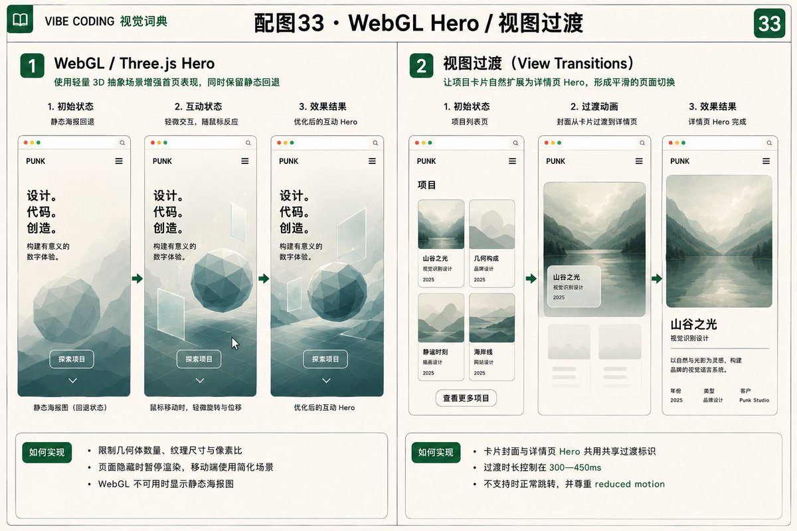
原文配图 · Adrian Punk (@AdrianPunk115) · 词条 78
Punk 的项目卡片点击后使用 View Transition 进入详情页。 卡片封面与详情页 Hero 共享 view-transition-name，让图片从卡片位置自然扩展；过渡控制在 300—450ms；浏览器不支持时正常导航； 不要让过渡影响焦点、阅读位置或返回按钮行为，并在 reduced motion 下跳过动画。
Punk 的项目卡片点击后使用 View Transition 进入详情页。 卡片封面与详情页 Hero 共享 view-transition-name，让图片从卡片位置自然扩展；过渡控制在 300—450ms；浏览器不支持时正常导航； 不要让过渡影响焦点、阅读位置或返回按钮行为，并在 reduced motion 下跳过动画。
79Reduced Motion减少动态
当用户系统开启“减少动态效果”时，网站降低或移除非必要位移、缩放、视差和自动播放，保留功能与信息反馈。
适合 所有包含动画、滚动效果、视差或 3D 的网页。
为 Punk 网站完整支持 prefers-reduced-motion: reduce。 关闭 Parallax、磁吸按钮、3D Tilt、自动 Marquee 和大范围页面过渡； Scroll Reveal 改为直接显示或短淡入；Carousel 停止自动播放；所有功能仍可操作，不能因为关闭动画而隐藏内容或丢失状态反馈。
为 Punk 网站完整支持 prefers-reduced-motion: reduce。 关闭 Parallax、磁吸按钮、3D Tilt、自动 Marquee 和大范围页面过渡； Scroll Reveal 改为直接显示或短淡入；Carousel 停止自动播放；所有功能仍可操作，不能因为关闭动画而隐藏内容或丢失状态反馈。
80Performance Budget性能预算
在开发前为脚本、图片、字体、请求数量和关键性能指标设定上限，避免视觉效果无限增加导致网站越来越慢。
适合 图片型作品集、动画网站、AI 产品、营销页、WebGL 项目。
Punk｜中科大 MBA｜HerName 首席设计师｜Stanley 商学院执行院长｜ ｜AI提示词｜3个月赚了8位数｜Learn in Public｜@AdrianPunk115
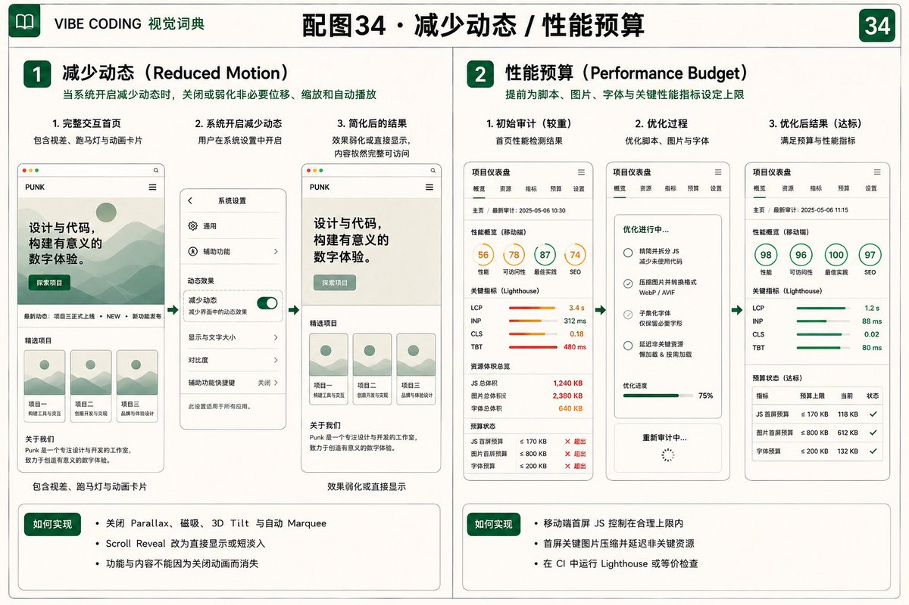
原文配图 · Adrian Punk (@AdrianPunk115) · 词条 80
请为 Punk 设计并实现一个响应式个人作品网站的体验增强版本。 注意：Punk 是人物姓名和网站署名，不是朋克文化或朋克视觉风格。不要自动使用皮衣、莫霍克发型、涂鸦、铆钉或反叛海报元素。 【滚动与动作】 首页和项目案例使用轻量 Scroll Reveal，元素进入视口时淡入并向上移动 16px。 精选项目区使用 Horizontal Scroll 与 CSS Scroll Snap。 长篇文章顶部显示 Scroll Progress Indicator。 AI 灵感流使用 Infinite Scroll，并通过 IntersectionObserver 在接近底部时加载下一批内容。 技能标签使用缓慢 Marquee，但 reduced motion 模式下改为静态标签。 卡片 hover 只使用轻微上移、边框变化和箭头移动。 所有滚动动画都必须支持 prefers-reduced-motion。 【提示与加载】 项目列表加载前显示与最终布局一致的 Skeleton Screen。 首屏以下图片和 iframe 使用 Lazy Loading，并预设尺寸避免布局跳动。 短任务使用局部 Spinner，可计算进度的任务使用 Progress Bar。 提交按钮进入 Loading Button 状态，防止重复提交。 项目为空时显示 Empty State，并提供创建项目按钮。 加载失败时显示 Error State 和 Retry 操作。 收藏等低风险操作可以使用 Optimistic UI。 表单使用 Inline Validation，并通过合适的 live region 通知状态变化。 【视觉风格】 整体采用 Minimalism 与 Editorial Design 的组合。 米白背景、黑色正文、深绿色强调，严格控制颜色数量。 使用清晰网格、大标题、编号、跨栏图片和充足留白。 Hero 可以局部使用克制 Glassmorphism 和低饱和 Gradient Mesh。 背景可以加入极轻的 Grain Texture。 不要把所有元素都做成透明玻璃卡片，也不要使用家居产品摆拍。 【高级效果】 桌面端作品画廊可以使用 Custom Cursor，但触屏设备保持原生交互。 主要 CTA 可以使用轻量 Magnetic Button。 精选项目卡片可以使用最大 5deg 的 3D Tilt。 图片进入视口时可以使用一次性的 Clip-path Reveal。 首页允许使用轻量 Three.js 抽象场景，但必须提供静态回退图。 项目卡片到详情页使用 View Transitions，并为不支持浏览器正常降级。 完整支持 prefers-reduced-motion。 制定性能预算，限制脚本、字体、图片和 WebGL 资源，不要为了视觉效果牺牲首屏加载和可访问性。 【技术要求】 使用语义化 HTML、现代 CSS 和少量必要 JavaScript。 优先使用 CSS Scroll Snap、CSS Scroll-driven Animations、IntersectionObserver、原生 lazy loading 和 View Transition API。 所有交互支持键盘操作、清晰焦点状态和屏幕阅读器。 动画不能隐藏重要内容，也不能成为完成任务的必要条件。
请为 Punk 设计并实现一个响应式个人作品网站的体验增强版本。 注意：Punk 是人物姓名和网站署名，不是朋克文化或朋克视觉风格。不要自动使用皮衣、莫霍克发型、涂鸦、铆钉或反叛海报元素。 【滚动与动作】 首页和项目案例使用轻量 Scroll Reveal，元素进入视口时淡入并向上移动 16px。 精选项目区使用 Horizontal Scroll 与 CSS Scroll Snap。 长篇文章顶部显示 Scroll Progress Indicator。 AI 灵感流使用 Infinite Scroll，并通过 IntersectionObserver 在接近底部时加载下一批内容。 技能标签使用缓慢 Marquee，但 reduced motion 模式下改为静态标签。 卡片 hover 只使用轻微上移、边框变化和箭头移动。 所有滚动动画都必须支持 prefers-reduced-motion。 【提示与加载】 项目列表加载前显示与最终布局一致的 Skeleton Screen。 首屏以下图片和 iframe 使用 Lazy Loading，并预设尺寸避免布局跳动。 短任务使用局部 Spinner，可计算进度的任务使用 Progress Bar。 提交按钮进入 Loading Button 状态，防止重复提交。 项目为空时显示 Empty State，并提供创建项目按钮。 加载失败时显示 Error State 和 Retry 操作。 收藏等低风险操作可以使用 Optimistic UI。 表单使用 Inline Validation，并通过合适的 live region 通知状态变化。 【视觉风格】 整体采用 Minimalism 与 Editorial Design 的组合。 米白背景、黑色正文、深绿色强调，严格控制颜色数量。 使用清晰网格、大标题、编号、跨栏图片和充足留白。 Hero 可以局部使用克制 Glassmorphism 和低饱和 Gradient Mesh。 背景可以加入极轻的 Grain Texture。 不要把所有元素都做成透明玻璃卡片，也不要使用家居产品摆拍。 【高级效果】 桌面端作品画廊可以使用 Custom Cursor，但触屏设备保持原生交互。 主要 CTA 可以使用轻量 Magnetic Button。 精选项目卡片可以使用最大 5deg 的 3D Tilt。 图片进入视口时可以使用一次性的 Clip-path Reveal。 首页允许使用轻量 Three.js 抽象场景，但必须提供静态回退图。 项目卡片到详情页使用 View Transitions，并为不支持浏览器正常降级。 完整支持 prefers-reduced-motion。 制定性能预算，限制脚本、字体、图片和 WebGL 资源，不要为了视觉效果牺牲首屏加载和可访问性。 【技术要求】 使用语义化 HTML、现代 CSS 和少量必要 JavaScript。 优先使用 CSS Scroll Snap、CSS Scroll-driven Animations、IntersectionObserver、原生 lazy loading 和 View Transition API。 所有交互支持键盘操作、清晰焦点状态和屏幕阅读器。 动画不能隐藏重要内容，也不能成为完成任务的必要条件。
SOURCES & CREDITS
引用与原文出处
-
ORIGINAL ARTICLE
HTML 小白从 0 到 1：学懂网页基础，再用 Agent 做出个人主页
作者：Adrian Punk (@AdrianPunk115) · 发布于 2026/08/02 · 45,401 浏览
涵盖：14 章 HTML/CSS/JS 基础 + 4 段 Agent 提示词
原文链接：https://x.com/AdrianPunk115/status/2083832138462605504 -
ORIGINAL ARTICLE
Vibe Coding 视觉词典（上篇）：布局、页面结构、导航与常用组件
作者：Adrian Punk (@AdrianPunk115) · 发布于 2026/08/04 · 221,929 浏览
涵盖：4 章 × 10 词条：Layout / Structure / Navigation / Components
原文链接：https://x.com/AdrianPunk115/status/2084538166577602899 -
ORIGINAL ARTICLE
Vibe Coding 视觉词典（下篇）：滚动动作、提示加载、视觉风格与高级效果
作者：Adrian Punk (@AdrianPunk115) · 发布于 2026/08/05 · 31,357 浏览
涵盖：4 章 × 10 词条：Scroll & Motion / Feedback & Loading / Visual Styles / Advanced Effects
原文链接：https://x.com/AdrianPunk115/status/2084932520953753985 - AUTHOR · X https://x.com/AdrianPunk115 — Adrian Punk，中科大 MBA，HerName 首席设计师，Stanley 商学院执行院长
- AUTHOR · GITHUB github.com/adrianpunk/Punk-Skill — Punk 的开源 Prompt 工具集
- INTERPRETATION 本文为解读版本，按中文阅读习惯合并三篇 X 长文。原文中所有 prompt 模板均保留中文原貌（CN body）；EN body 为英文意译，方便需要英文 prompt 的读者使用。如需引用请以原文为准。
这 80 个词条不是"做网页的全集"，而是"和 AI 沟通时该用的术语集"。每个词条的提示词都按 Punk 的个人网站风格设计 — 米白背景 + 深绿色强调色 + 编辑设计风。直接复制即可使用，把 "Punk" 替换成你自己的名字就行。
当别人输入你的网址，看见你亲手规划、再由 Agent 帮你完成的网页时，第一个网站就正式完成了。
— ADRIAN PUNK · HTML 小白从 0 到 1 · 收尾